← 回股市觀察
盤中觀察 每日盤中觀察
2026/09/29 12:31 即時快照 · 當日盤中成交金額前 50 檔（上市 35＋上櫃 15）· 公開資料整理
47,678.47
加權指數 -346.13 點（-0.72%）
這是盤中快照，不是收盤結果。資料時間 2026-09-29 12:31:00（TWSE MIS 即時行情，上市／上櫃皆 delay=0）。
13:30 收盤（含最後一盤集合競價）會再變動；量能是以「已過交易時間比例」推估（尾盤大量時會低估）；
技術面標籤是把盤中現價代入原本以收盤價設計的規則（日線歷史只到前一交易日 9/14）。
統計範圍：候選池＝20260924 與 20260923 收盤成交值前段（上市 250／上櫃 130）取聯集，共 419 檔；再以今日盤中累計成交金額排序取
上市前 35＋上櫃前 15。漲跌家數是候選池內的數字，不是全市場（即時全市場家數證交所沒有開放端點）。
本頁為公開資料的整理與觀察，不構成投資建議，不報牌、不預測、不下買賣決策。
時程紀錄（本日盤中分析）▾ 點擊展開▴ 點擊收合
| 階段 | 時間 |
|---|
| 任務開始 | 由排程自動觸發（週一～週五 12:30） |
| 分析腳本執行 | 12:30:30 → 12:31:00（29.5 秒） |
| 資料快照時間 | 2026-09-29 12:31:00（行情時間戳 12:30:46） |
| 本頁產出 | 見頁尾版本時間 |
逐階段 log：
| 12:30:30 | START 盤中分析開始 |
| 12:30:30 | ① 抓即時指數（tse_t00 / otc_o00） |
| 12:30:30 | ② 建立候選池（20260924 與 20260923 成交值前段，上市＋上櫃） |
| 12:30:31 | 候選池共 419 檔 |
| 12:30:31 | ③ 抓即時候選池行情 |
| 12:30:59 | 取得即時報價 419 檔 |
| 12:30:59 | 候選池漲跌：漲 188／跌 215／平盤 16（快照時間 12:30:46） |
| 12:30:59 | ④ 選出 70 檔（上市 50＋上櫃 20），門檻 18.4 億 |
| 12:30:59 | ⑤ 抓日線歷史並算技術面 |
| 12:31:00 | ⑥ 產出（70 檔） |
K 線圖怎麼看：每一檔都附 K 線圖 —— 黃圈是轉折低點、粉圈是轉折高點（
虛線圈代表還沒確認的轉折）、藍線是月線（20 日均線）；頸線取最近兩個轉折低點之間的最高轉折高點，
突破頸線才會標示。
圖上另有兩條水平虛線、左側標數值：高點頸線（紅，最近兩個轉折低點之間的最高轉折高點）與低點頸線（綠，最近兩個轉折高點之間的最低轉折低點）；樣本不足就不畫。
紅色 K 棒＝收盤高於開盤、綠色＝收盤低於開盤。
大盤趨勢快篩（加權指數）（盤中近似） 資料日 2026/09/24・來源：證交所公開資料
主狀態：多頭排列
前一交易日對照（09/23）：多頭排列（量比 20 0.97） → 今日多頭排列（量比 20 0.85）
指標、數值、判定（點開看 12 項明細：均線位置／排列、月線方向、頸線、轉折結構、位階、量價…）
加權指數今天跌 132.69 點（-0.28%），收 48,024.60、站上月線 46,755.77；月線還在上彎，已站上高點頸線 47,308.75。
- 均線位置：收盤在 MA5、MA10、MA20、MA60 之上（4 條全部站上）
- 月線方向：月線 MA20 現在 46,755.77，比 5 個交易日前高 595.89 點 → 上彎
- 量能：集中市場成交 7,755.9 億，比 5 日均量少很多（0.82 倍）、比 20 日均量少一些（0.85 倍）
- 關鍵價位：高點頸線 47,308.75已突破；低點頸線 44,592.92，還在下方 7.70%
- 大小型股：加權 -0.28%、櫃買 -0.19%，兩邊同向
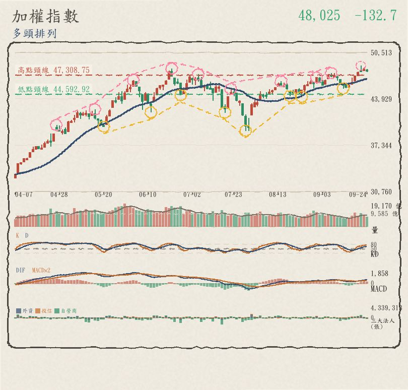
圖說：加權指數日 K（與個股圖相同標記）：黃圈＝轉折低點、粉圈＝轉折高點、虛線小圈＝還沒確認的轉折、藍線＝月線 MA20、水平虛線＝高點／低點頸線。最後一根是資料日當天。
本區塊為公開資料的技術面觀察，不構成投資建議，
不報牌、不預測、不下買賣決策。成交金額為集中市場總成交金額（含 ETF／權證），
與頁首摘要的「上市個股成交金額」口徑不同。標籤是統計，不是評分、也不是推薦。
上市 vs 上櫃（同期快篩）
加權 -0.28% vs 櫃買 -0.19%（同向） → 同向
（兩個市場分開寫，不合併成一個數字；櫃買為 TPEX 公開資料）
櫃買歷史：TPEX 逐日回補 130 根；來源：櫃買中心 www/zh-tw/indexInfo/sectinx（逐日，官方；OpenAPI tpex_index 只回當月）
（TPEX OpenAPI 只回當月，故逐日回補；歷史不足就不算該條均線並標「資料不足」，不用錯數字）
近 20 個交易日大盤狀態回溯（最新在上）（點開看逐日主狀態／量比／量價象限）
用同一支程式回算最近 20 個交易日（主狀態 S1~S8 與量比 20 皆為當日收盤當時的判定，
不是事後調整）；量比 20 未公布的日子寫「—」。
好條件最多的（前 10）
不好條件最多的（前 10）
好條件（8 項）：站上月線、月線向上、底底高、頭頭高、突破頸線、相對大盤強、攻擊量（量增＋上漲）、守住今日高檔（距今日高點 1% 內）。
不好條件（8 項）：跌破前低、今日下跌、相對大盤弱、在月線之下、量增下跌（出貨）、貼近今日低點（1% 內）、跌破昨日低點、月線下彎。
兩邊都是同一組日線資料＋盤中即時價算出來的「符合項目數」，只是把方向相反的條件分開數；
條件數不是評分或推薦，不構成投資建議。
逆勢上漲（加權下跌、個股上漲）（35 上市 25／上櫃 10）
盤中爆量（估量比 ≥ 1.5）（15 上市 11／上櫃 4）
今日疲弱（跌幅前 10）（10 上市 8／上櫃 2）
逐檔（70 檔，依盤中成交金額排序）
聯發科 2454 上市
4940 -345.0（-6.53%）
高點墊高、底部不穩 盤中成交值 442.53 億・全榜第 1 名（上市第 1 名）・相對大盤 -5.81
好條件 3/8：站上月線、月線向上、頭頭高
不好條件 4/8：今日下跌、相對大盤弱、量增下跌（出貨）、跌破昨日低點
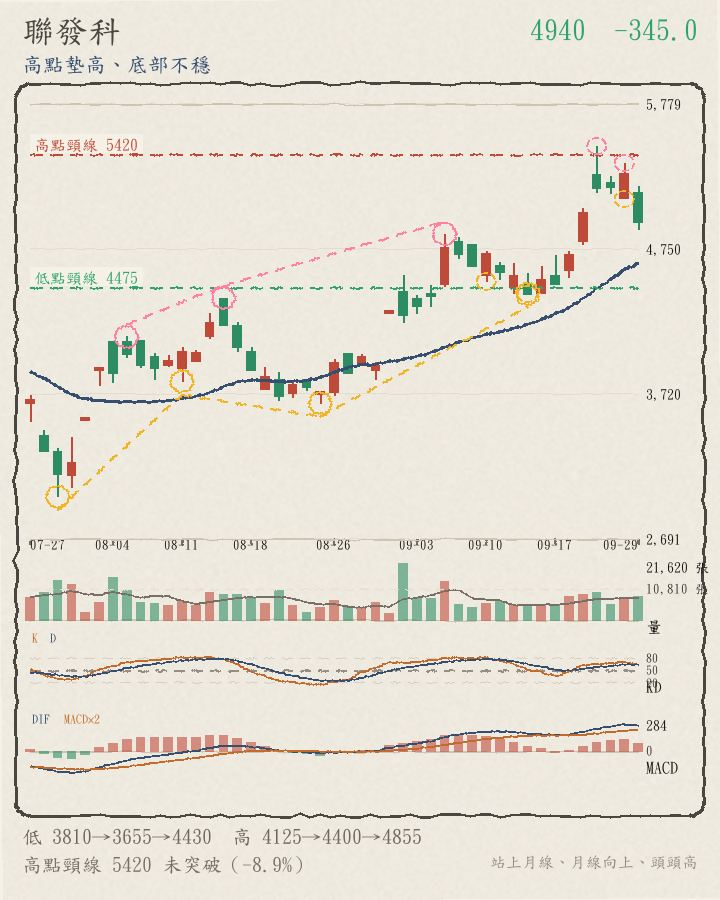
12:31 盤中 4940（-6.53%），比加權指數弱 5.81 個百分點、站上月線 4602.25，離高點頸線 5420 還差 8.9%，高點還在墊高（但底部沒同步墊高）。
- 月線位置：現價 4940 在月線 4602.25 之上（+7.3%）；5 日線 5074 也在月線之上（短均在上）；月線向上
- 量能：以已過交易時間推估，今天成交量約是 20 日均量的 1.50 倍（爆量），比 20 日均量大不少；下跌卻量增，量價背離
- 關鍵價位：高點頸線 5420 還沒突破，差 8.9%；前一交易日高點 5360（低於 7.8%）；今天盤中高點 5195（低於 4.9%）；今天盤中低點 4890（高於 1.0%）
- 轉折結構：高點 4125、4400、4855 墊高（頭頭高），但低點 3810、3655、4430 沒有同步墊高；還沒確認的轉折低點 09-15 4430、09-24 5105；還沒確認的轉折高點 09-22 5480、09-24 5360（圖上虛線小圈）
台積電 2330 上市
2480 +5.0（+0.20%）
高點墊高、底部不穩 盤中成交值 377.38 億・全榜第 2 名（上市第 2 名）・相對大盤 +0.92
好條件 6/8：站上月線、月線向上、頭頭高、突破頸線、相對大盤強、守住今日高檔（距今日高點 1% 內）
不好條件 1/8：貼近今日低點（1% 內）
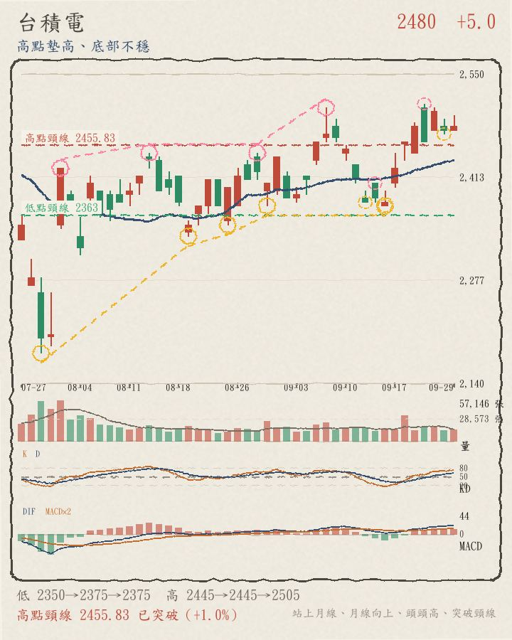
12:31 盤中 2480（+0.20%），比加權指數強 0.92 個百分點、站上月線 2432.5，已突破高點頸線 2455.83，高點還在墊高（但底部沒同步墊高）。
- 月線位置：現價 2480 在月線 2432.5 之上（+1.9%）；5 日線 2475 也在月線之上（短均在上）；月線向上
- 量能：以已過交易時間推估，今天成交量約是 20 日均量的 1.04 倍（量平），跟 20 日均量差不多
- 關鍵價位：高點頸線 2455.83 已站上；前一交易日高點 2490（低於 0.4%）；今天盤中高點 2495（低於 0.6%）；今天盤中低點 2475（高於 0.2%）
- 轉折結構：高點 2445、2445、2505 墊高（頭頭高），但低點 2350、2375、2375 沒有同步墊高；還沒確認的轉折低點 09-16 2375、09-24 2470；還沒確認的轉折高點 09-15 2405、09-22 2510（圖上虛線小圈）
台達電 2308 上市
1845 -65.0（-3.40%）
高點墊高、底部不穩 盤中成交值 185.35 億・全榜第 3 名（上市第 3 名）・相對大盤 -2.68
好條件 3/8：站上月線、月線向上、頭頭高
不好條件 4/8：今日下跌、相對大盤弱、量增下跌（出貨）、跌破昨日低點
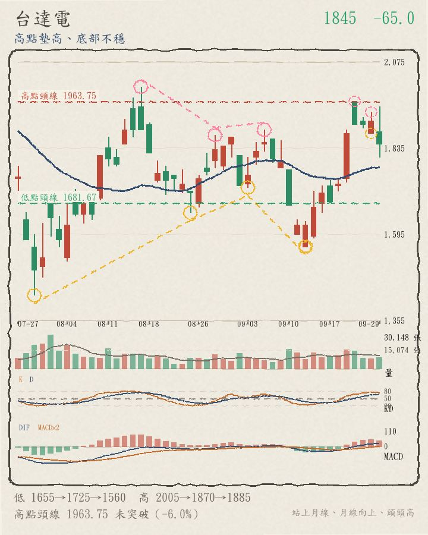
12:31 盤中 1845（-3.40%），比加權指數弱 2.68 個百分點、站上月線 1780，離高點頸線 1963.75 還差 6.0%，高點還在墊高（但底部沒同步墊高）。
- 月線位置：現價 1845 在月線 1780 之上（+3.6%）；5 日線 1864 也在月線之上（短均在上）；月線向上
- 量能：以已過交易時間推估，今天成交量約是 20 日均量的 1.20 倍（量增），比 20 日均量大不少；下跌卻量增，量價背離
- 關鍵價位：高點頸線 1963.75 還沒突破，差 6.0%；前一交易日高點 1935（低於 4.7%）；今天盤中高點 1950（低於 5.4%）；今天盤中低點 1810（高於 1.9%）
- 轉折結構：高點 2005、1870、1885 墊高（頭頭高），但低點 1655、1725、1560 沒有同步墊高；還沒確認的轉折低點 09-14 1560、09-24 1875；還沒確認的轉折高點 09-22 1965、09-24 1935（圖上虛線小圈）
臻鼎-KY 4958 上市
498 +22.5（+4.73%）
上升趨勢（底底高＋頭頭高） 盤中成交值 171.76 億・全榜第 4 名（上市第 4 名）・相對大盤 +5.45
好條件 7/8：站上月線、月線向上、底底高、頭頭高、相對大盤強、攻擊量（量增＋上漲）、守住今日高檔（距今日高點 1% 內）
不好條件 0/8：無
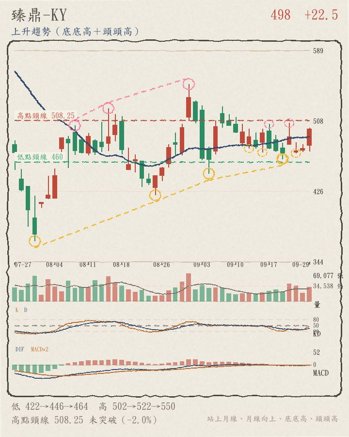
12:31 盤中 498（+4.73%），比加權指數強 5.45 個百分點、站上月線 488.2，離高點頸線 508.25 還差 2.0%，轉折結構仍是底底高＋頭頭高。
- 月線位置：現價 498 在月線 488.2 之上（+2.0%）；5 日線 476.1 也在月線之下（短均在下）；月線向上
- 量能：以已過交易時間推估，今天成交量約是 20 日均量的 1.44 倍（量增），比 20 日均量大不少；上漲又量增，量價配合
- 關鍵價位：高點頸線 508.25 還沒突破，差 2.0%；前一交易日高點 480.5（高於 3.6%）；今天盤中高點 499.5（低於 0.3%）；今天盤中低點 472.5（高於 5.4%）
- 轉折結構：低點 421.5、446.5、463.5 一路墊高、高點 502、522、550 也一路墊高，是底底高＋頭頭高；還沒確認的轉折低點 09-21 463.5、09-23 470；還沒確認的轉折高點 09-17 504、09-22 505（圖上虛線小圈）
國巨* 2327 上市
551 -29.0（-5.00%）
區間或轉弱 盤中成交值 168.54 億・全榜第 5 名（上市第 5 名）・相對大盤 -4.28
好條件 1/8：月線向上
不好條件 5/8：今日下跌、相對大盤弱、在月線之下、貼近今日低點（1% 內）、跌破昨日低點
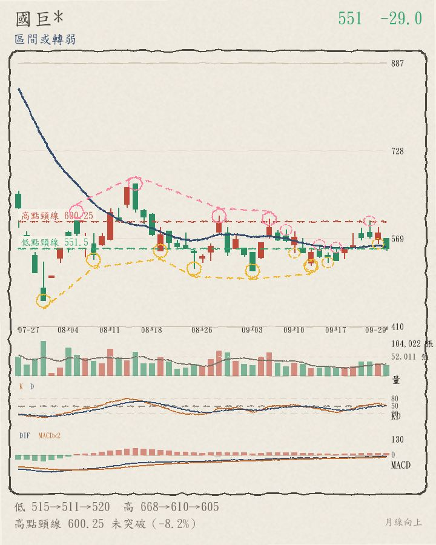
12:31 盤中 551（-5.00%），比加權指數弱 4.28 個百分點、跌破月線 556.9，離高點頸線 600.25 還差 8.2%，轉折還沒走出明顯方向。
- 月線位置：現價 551 在月線 556.9 之下（-1.1%）；5 日線 566.2 也在月線之上（短均在上）；月線向上
- 量能：以已過交易時間推估，今天成交量約是 20 日均量的 1.00 倍（量平），跟 20 日均量差不多
- 關鍵價位：高點頸線 600.25 還沒突破，差 8.2%；前一交易日高點 589（低於 6.5%）；今天盤中高點 570（低於 3.3%）；今天盤中低點 548（高於 0.5%）
- 轉折結構：低點 515、511、520 與高點 668、610、605 都沒有明顯遞增，屬於區間震盪或轉弱；還沒確認的轉折低點 09-16 526、09-24 560；還沒確認的轉折高點 09-17 553、09-23 601（圖上虛線小圈）
友達 2409 上市
35.35 +1.1（+3.36%）
高點墊高、底部不穩 盤中成交值 158.75 億・全榜第 6 名（上市第 6 名）・相對大盤 +4.08
好條件 5/8：站上月線、月線向上、頭頭高、相對大盤強、攻擊量（量增＋上漲）
不好條件 0/8：無
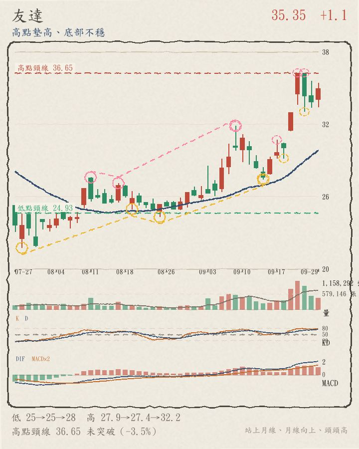
12:31 盤中 35.35（+3.36%），比加權指數強 4.08 個百分點、站上月線 29.705，離高點頸線 36.65 還差 3.5%，高點還在墊高（但底部沒同步墊高）。
- 月線位置：現價 35.35 在月線 29.705 之上（+19.0%）；5 日線 33.85 也在月線之上（短均在上）；月線向上
- 量能：以已過交易時間推估，今天成交量約是 20 日均量的 1.38 倍（量增），比 20 日均量大不少；上漲又量增，量價配合
- 關鍵價位：高點頸線 36.65 還沒突破，差 3.5%；前一交易日高點 35.95（低於 1.7%）；今天盤中高點 35.8（低於 1.3%）；今天盤中低點 33.8（高於 4.6%）
- 轉折結構：高點 27.9、27.4、32.2 墊高（頭頭高），但低點 25.25、24.6、27.75 沒有同步墊高；還沒確認的轉折低點 09-18 29.5、09-23 33.4；還沒確認的轉折高點 09-22 36.65、09-23 36.65（圖上虛線小圈）
聯電 2303 上市
154.5 +0.5（+0.32%）
上升趨勢（底底高＋頭頭高） 盤中成交值 136.63 億・全榜第 7 名（上市第 7 名）・相對大盤 +1.04
好條件 7/8：站上月線、月線向上、底底高、頭頭高、突破頸線、相對大盤強、守住今日高檔（距今日高點 1% 內）
不好條件 0/8：無
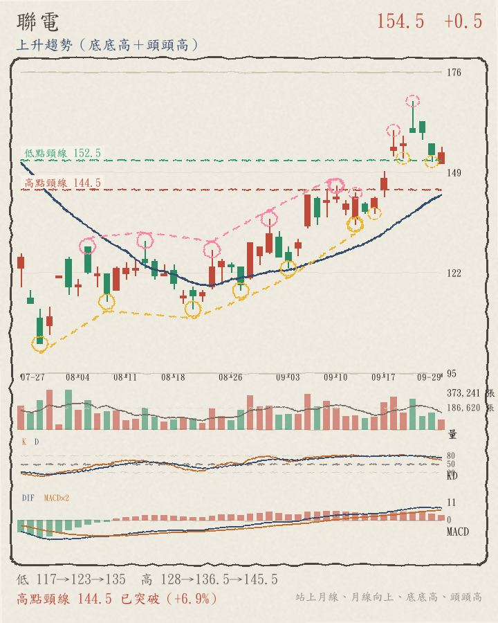
12:31 盤中 154.5（+0.32%），比加權指數強 1.04 個百分點、站上月線 141.725，已突破高點頸線 144.5，轉折結構仍是底底高＋頭頭高。
- 月線位置：現價 154.5 在月線 141.725 之上（+9.0%）；5 日線 157.4 也在月線之上（短均在上）；月線向上
- 量能：以已過交易時間推估，今天成交量約是 20 日均量的 0.57 倍（量縮），比 20 日均量少很多；上漲但量縮，量價背離
- 關鍵價位：高點頸線 144.5 已站上；前一交易日高點 157（低於 1.6%）；今天盤中高點 156（低於 1.0%）；今天盤中低點 151.5（高於 2.0%）
- 轉折結構：低點 117、123、135 一路墊高、高點 128、136.5、145.5 也一路墊高，是底底高＋頭頭高；還沒確認的轉折低點 09-21 153、09-24 152；還沒確認的轉折高點 09-18 160.5、09-22 168.5（圖上虛線小圈）
南亞 1303 上市
244.5 +6.5（+2.73%）
上升趨勢（底底高＋頭頭高） 盤中成交值 127.06 億・全榜第 8 名（上市第 8 名）・相對大盤 +3.45
好條件 6/8：站上月線、月線向上、底底高、頭頭高、相對大盤強、守住今日高檔（距今日高點 1% 內）
不好條件 0/8：無
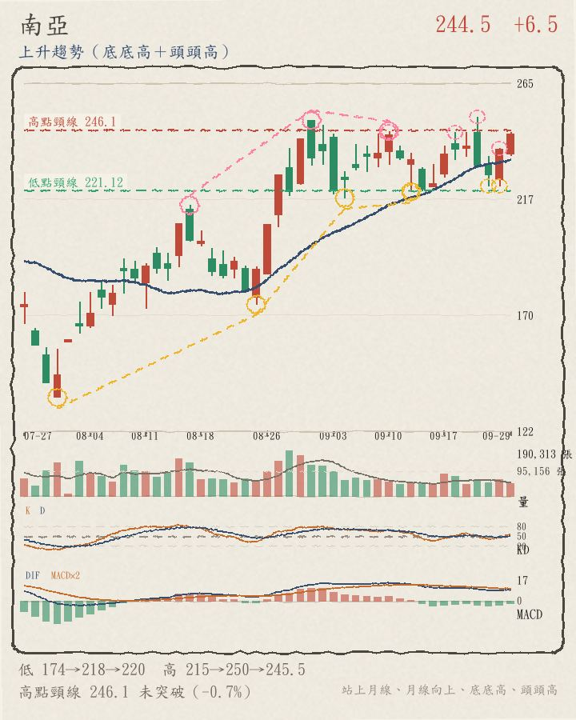
12:31 盤中 244.5（+2.73%），比加權指數強 3.45 個百分點、站上月線 232.6，離高點頸線 246.1 還差 0.7%，轉折結構仍是底底高＋頭頭高。
- 月線位置：現價 244.5 在月線 232.6 之上（+5.1%）；5 日線 234.9 也在月線之上（短均在上）；月線向上
- 量能：以已過交易時間推估，今天成交量約是 20 日均量的 0.76 倍（量平），比 20 日均量少很多；上漲但量縮，量價背離
- 關鍵價位：高點頸線 246.1 還沒突破，差 0.7%；前一交易日高點 238.5（高於 2.5%）；今天盤中高點 245（低於 0.2%）；今天盤中低點 235.5（高於 3.8%）
- 轉折結構：低點 174、218、220.5 一路墊高、高點 215、250、245.5 也一路墊高，是底底高＋頭頭高；還沒確認的轉折低點 09-23 223、09-24 223；還沒確認的轉折高點 09-22 251.5、09-24 238.5（圖上虛線小圈）
景碩 3189 上市
955 -7.0（-0.73%）
高點墊高、底部不穩 盤中成交值 112.22 億・全榜第 9 名（上市第 9 名）・相對大盤 -0.01
好條件 4/8：站上月線、月線向上、頭頭高、突破頸線
不好條件 2/8：今日下跌、相對大盤弱
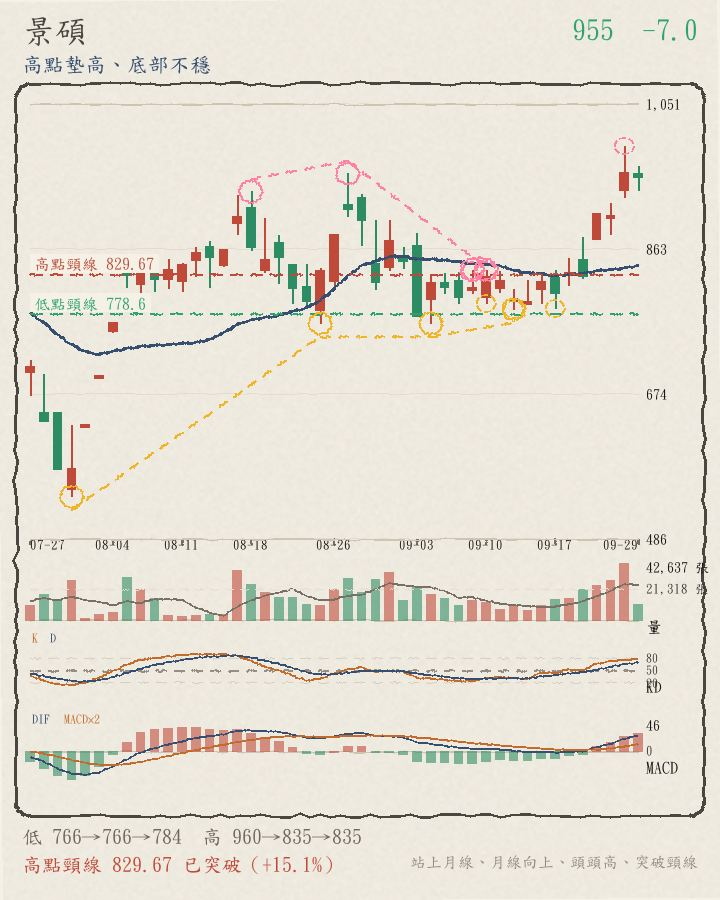
12:31 盤中 955（-0.73%），比加權指數弱 0.01 個百分點、站上月線 838.05，已突破高點頸線 829.67，高點還在墊高（但底部沒同步墊高）。
- 月線位置：現價 955 在月線 838.05 之上（+14.0%）；5 日線 887.2 也在月線之上（短均在上）；月線向上
- 量能：以已過交易時間推估，今天成交量約是 20 日均量的 0.80 倍（量平），比 20 日均量少很多
- 關鍵價位：高點頸線 829.67 已站上；前一交易日高點 996（低於 4.1%）；今天盤中高點 969（低於 1.4%）；今天盤中低點 939（高於 1.7%）
- 轉折結構：高點 960、835、835 墊高（頭頭高），但低點 766、766、784 沒有同步墊高；還沒確認的轉折低點 09-14 784、09-17 785；還沒確認的轉折高點 09-10 835、09-24 996（圖上虛線小圈）
聯茂 6213 上市
601 +6.0（+1.01%）
高點墊高、底部不穩 盤中成交值 109.67 億・全榜第 10 名（上市第 10 名）・相對大盤 +1.73
好條件 6/8：站上月線、月線向上、頭頭高、突破頸線、相對大盤強、攻擊量（量增＋上漲）
不好條件 0/8：無
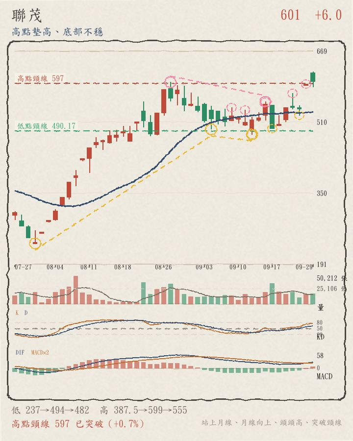
12:31 盤中 601（+1.01%），比加權指數強 1.73 個百分點、站上月線 531.2，已突破高點頸線 597，高點還在墊高（但底部沒同步墊高）。
- 月線位置：現價 601 在月線 531.2 之上（+13.1%）；5 日線 545.2 也在月線之上（短均在上）；月線向上
- 量能：以已過交易時間推估，今天成交量約是 20 日均量的 1.35 倍（量增），比 20 日均量大不少；上漲又量增，量價配合
- 關鍵價位：高點頸線 597 已站上；前一交易日高點 595（高於 1.0%）；今天盤中高點 623（低於 3.5%）；今天盤中低點 588（高於 2.2%）
- 轉折結構：高點 387.5、599、555 墊高（頭頭高），但低點 237、493.5、482 沒有同步墊高；還沒確認的轉折低點 09-17 495、09-23 525；還沒確認的轉折高點 09-22 574、09-24 595（圖上虛線小圈）
嘉晶 3016 上市
169 +9.0（+5.62%）
上升趨勢（底底高＋頭頭高） 盤中成交值 105.43 億・全榜第 11 名（上市第 11 名）・相對大盤 +6.34
好條件 7/8：站上月線、月線向上、底底高、頭頭高、突破頸線、相對大盤強、攻擊量（量增＋上漲）
不好條件 0/8：無
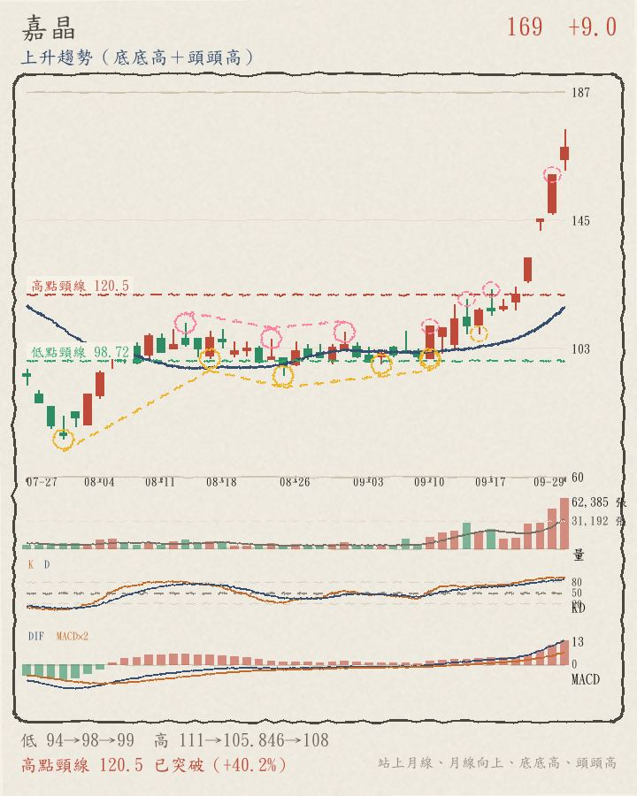
12:31 盤中 169（+5.62%），比加權指數強 6.34 個百分點、站上月線 112.795，已突破高點頸線 120.5，轉折結構仍是底底高＋頭頭高。
- 月線位置：現價 169 在月線 112.795 之上（+49.8%）；5 日線 135 也在月線之上（短均在上）；月線向上
- 量能：以已過交易時間推估，今天成交量約是 20 日均量的 6.19 倍（爆量），比 20 日均量大不少；上漲又量增，量價配合
- 關鍵價位：高點頸線 120.5 已站上；前一交易日高點 160（高於 5.6%）；今天盤中高點 175（低於 3.4%）；今天盤中低點 161.5（高於 4.6%）
- 轉折結構：低點 93.7634、97.5、99.3 一路墊高、高點 111、105.846、108 也一路墊高，是底底高＋頭頭高；還沒確認的轉折低點 09-10 99.3、09-16 107.5；還沒確認的轉折高點 09-17 122、09-24 160（圖上虛線小圈）
欣興 3037 上市
1170 -15.0（-1.27%）
高點墊高、底部不穩 盤中成交值 94.21 億・全榜第 12 名（上市第 12 名）・相對大盤 -0.55
好條件 3/8：站上月線、頭頭高、突破頸線
不好條件 3/8：今日下跌、相對大盤弱、月線下彎
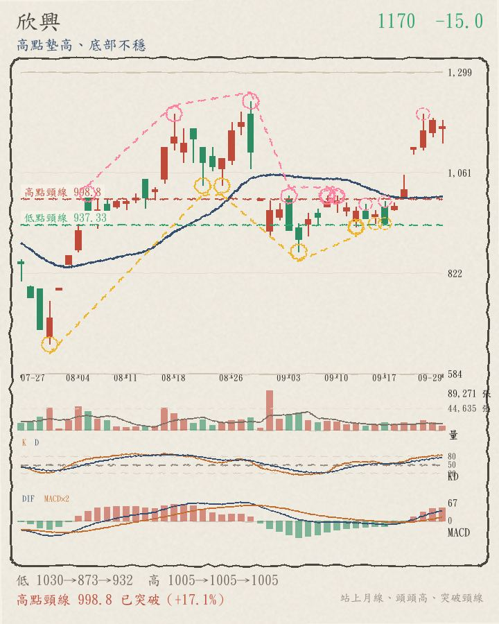
12:31 盤中 1170（-1.27%），比加權指數弱 0.55 個百分點、站上月線 1001.65，已突破高點頸線 998.8，高點還在墊高（但底部沒同步墊高）。
- 月線位置：現價 1170 在月線 1001.65 之上（+16.8%）；5 日線 1093.2 也在月線之上（短均在上）；月線向下
- 量能：以已過交易時間推估，今天成交量約是 20 日均量的 0.47 倍（量縮），比 20 日均量少很多
- 關鍵價位：高點頸線 998.8 已站上；前一交易日高點 1190（低於 1.7%）；今天盤中高點 1185（低於 1.3%）；今天盤中低點 1130（高於 3.5%）
- 轉折結構：高點 1005、1005、1005 墊高（頭頭高），但低點 1030、873、932 沒有同步墊高；還沒確認的轉折低點 09-16 940、09-17 940；還沒確認的轉折高點 09-17 993、09-23 1200（圖上虛線小圈）
南電 8046 上市
1275 +35.0（+2.82%）
上升趨勢（底底高＋頭頭高） 盤中成交值 92.35 億・全榜第 13 名（上市第 13 名）・相對大盤 +3.54
好條件 5/8：站上月線、底底高、頭頭高、相對大盤強、守住今日高檔（距今日高點 1% 內）
不好條件 1/8：月線下彎
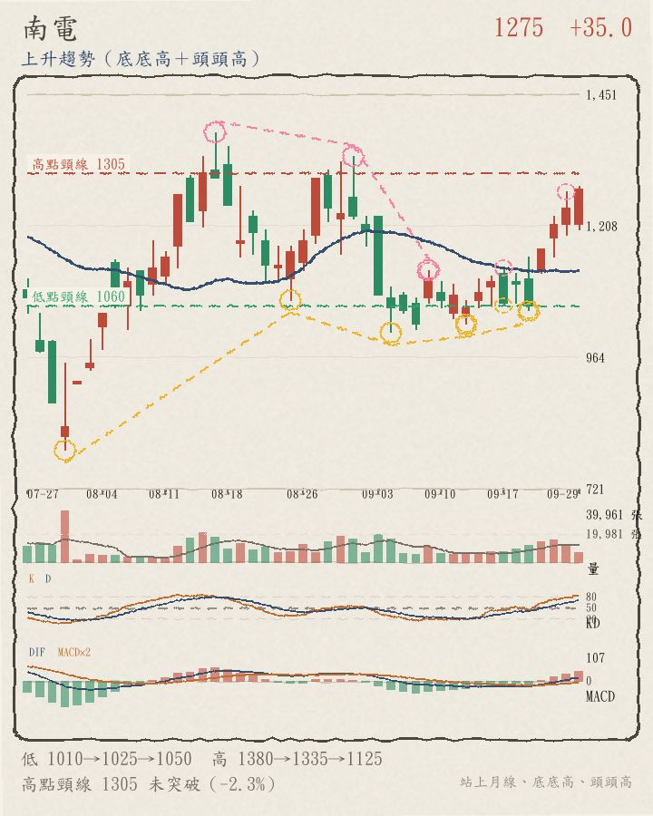
12:31 盤中 1275（+2.82%），比加權指數強 3.54 個百分點、站上月線 1122.5，離高點頸線 1305 還差 2.3%，轉折結構仍是底底高＋頭頭高。
- 月線位置：現價 1275 在月線 1122.5 之上（+13.6%）；5 日線 1155 也在月線之上（短均在上）；月線向下
- 量能：以已過交易時間推估，今天成交量約是 20 日均量的 0.80 倍（量平），比 20 日均量少很多；上漲但量縮，量價背離
- 關鍵價位：高點頸線 1305 還沒突破，差 2.3%；前一交易日高點 1270（高於 0.4%）；今天盤中高點 1280（低於 0.4%）；今天盤中低點 1200（高於 6.2%）
- 轉折結構：低點 1010、1025、1050 一路墊高、高點 1380、1335、1125 也一路墊高，是底底高＋頭頭高；還沒確認的轉折低點 09-17 1060、09-21 1050；還沒確認的轉折高點 09-17 1130、09-24 1270（圖上虛線小圈）
健策 3653 上市
6960 +40.0（+0.58%）
高點墊高、底部不穩 盤中成交值 91.04 億・全榜第 14 名（上市第 14 名）・相對大盤 +1.30
好條件 6/8：站上月線、月線向上、頭頭高、突破頸線、相對大盤強、攻擊量（量增＋上漲）
不好條件 0/8：無
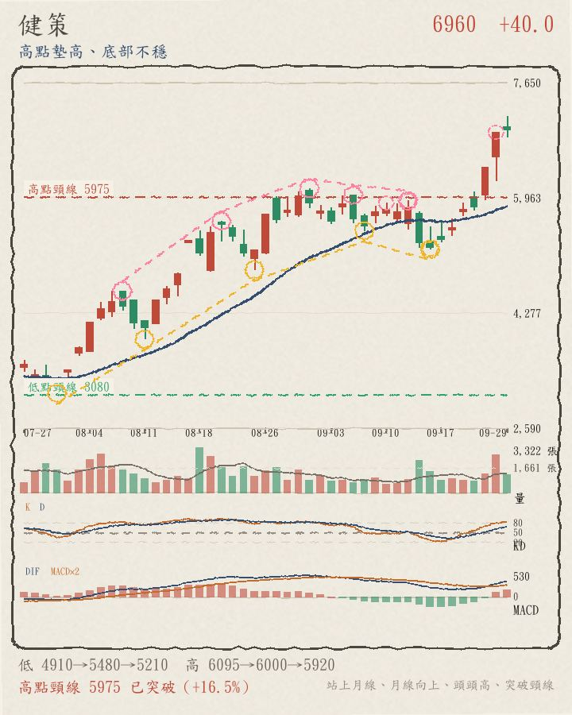
12:31 盤中 6960（+0.58%），比加權指數強 1.30 個百分點、站上月線 5782，已突破高點頸線 5975，高點還在墊高（但底部沒同步墊高）。
- 月線位置：現價 6960 在月線 5782 之上（+20.4%）；5 日線 6095 也在月線之上（短均在上）；月線向上
- 量能：以已過交易時間推估，今天成交量約是 20 日均量的 1.50 倍（爆量），比 20 日均量大不少；上漲又量增，量價配合
- 關鍵價位：高點頸線 5975 已站上；前一交易日高點 6920（高於 0.6%）；今天盤中高點 7160（低於 2.8%）；今天盤中低點 6850（高於 1.6%）
- 轉折結構：高點 6095、6000、5920 墊高（頭頭高），但低點 4910、5480、5210 沒有同步墊高；還沒確認的轉折低點 09-16 5210；還沒確認的轉折高點 09-14 5920、09-24 6920（圖上虛線小圈）
南亞科 2408 上市
503 +0.0（+0.00%）
區間或轉弱 盤中成交值 85.97 億・全榜第 15 名（上市第 15 名）・相對大盤 +0.72
好條件 2/8：相對大盤強、守住今日高檔（距今日高點 1% 內）
不好條件 2/8：在月線之下、月線下彎
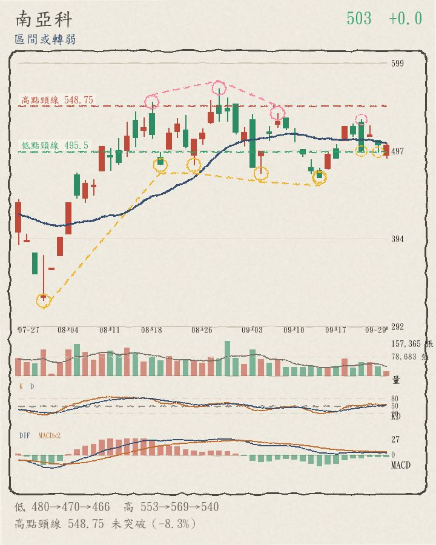
12:31 盤中 503（+0.00%），比加權指數強 0.72 個百分點、跌破月線 507.325，離高點頸線 548.75 還差 8.3%，轉折還沒走出明顯方向。
- 月線位置：現價 503 在月線 507.325 之下（-0.8%）；5 日線 511.2 也在月線之上（短均在上）；月線向下
- 量能：以已過交易時間推估，今天成交量約是 20 日均量的 0.35 倍（量縮），比 20 日均量少很多
- 關鍵價位：高點頸線 548.75 還沒突破，差 8.3%；前一交易日高點 509（低於 1.2%）；今天盤中高點 505（低於 0.4%）；今天盤中低點 488（高於 3.1%）
- 轉折結構：低點 480、470、465.5 與高點 553、569、540 都沒有明顯遞增，屬於區間震盪或轉弱；還沒確認的轉折低點 09-22 496、09-24 495；還沒確認的轉折高點 09-22 533（圖上虛線小圈）
量縮
↑ 回上方清單
奇鋐 3017 上市
3335 -220.0（-6.19%）
高點墊高、底部不穩 盤中成交值 83.17 億・全榜第 16 名（上市第 16 名）・相對大盤 -5.47
好條件 2/8：月線向上、頭頭高
不好條件 4/8：今日下跌、相對大盤弱、在月線之下、跌破昨日低點
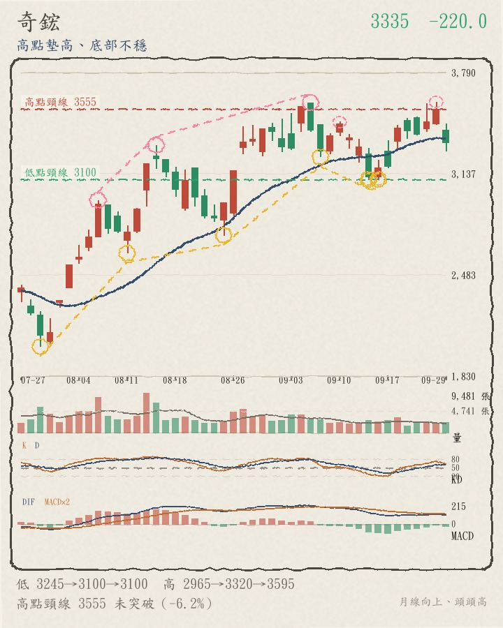
12:31 盤中 3335（-6.19%），比加權指數弱 5.47 個百分點、跌破月線 3366.75，離高點頸線 3555 還差 6.2%，高點還在墊高（但底部沒同步墊高）。
- 月線位置：現價 3335 在月線 3366.75 之下（-0.9%）；5 日線 3452 也在月線之上（短均在上）；月線向上
- 量能：以已過交易時間推估，今天成交量約是 20 日均量的 1.04 倍（量平），跟 20 日均量差不多
- 關鍵價位：高點頸線 3555 還沒突破，差 6.2%；前一交易日高點 3600（低於 7.4%）；今天盤中高點 3460（低於 3.6%）；今天盤中低點 3285（高於 1.5%）
- 轉折結構：高點 2965、3320、3595 墊高（頭頭高），但低點 3245、3100、3100 沒有同步墊高；還沒確認的轉折低點 09-15 3100、09-16 3100；還沒確認的轉折高點 09-10 3470、09-24 3600（圖上虛線小圈）
華新科 2492 上市
303 -8.5（-2.73%）
底部墊高、未過前高 盤中成交值 78.64 億・全榜第 17 名（上市第 17 名）・相對大盤 -2.01
好條件 2/8：月線向上、底底高
不好條件 3/8：今日下跌、相對大盤弱、在月線之下
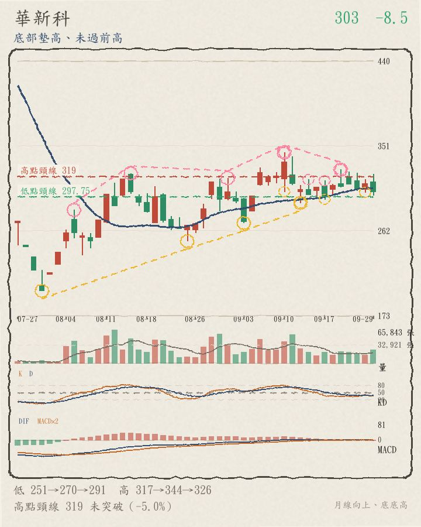
12:31 盤中 303（-2.73%），比加權指數弱 2.01 個百分點、跌破月線 306.85，離高點頸線 319 還差 5.0%，底部還在墊高（但高點沒同步創高）。
- 月線位置：現價 303 在月線 306.85 之下（-1.2%）；5 日線 309.3 也在月線之上（短均在上）；月線向上
- 量能：以已過交易時間推估，今天成交量約是 20 日均量的 1.11 倍（量增），比 20 日均量大一些；下跌卻量增，量價背離
- 關鍵價位：高點頸線 319 還沒突破，差 5.0%；前一交易日高點 315.5（低於 4.0%）；今天盤中高點 321（低於 5.6%）；今天盤中低點 299（高於 1.3%）
- 轉折結構：低點 251、270、291 墊高（底底高），但高點 317、344、326 沒有同步創高；還沒確認的轉折低點 09-17 295、09-24 302；還沒確認的轉折高點 09-17 314.5、09-21 326（圖上虛線小圈）
貿聯-KY 3665 上市
2415 +75.0（+3.21%）
高點墊高、底部不穩 盤中成交值 77.57 億・全榜第 18 名（上市第 18 名）・相對大盤 +3.93
好條件 5/8：站上月線、月線向上、頭頭高、相對大盤強、攻擊量（量增＋上漲）
不好條件 0/8：無
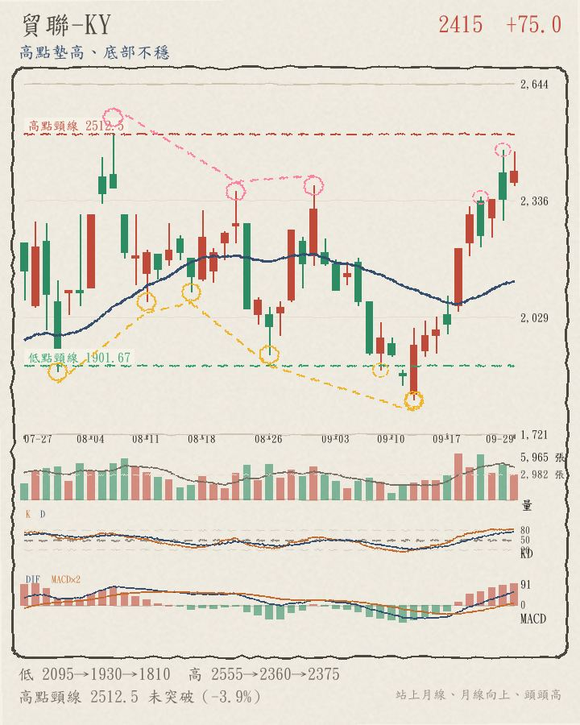
12:31 盤中 2415（+3.21%），比加權指數強 3.93 個百分點、站上月線 2116，離高點頸線 2512.5 還差 3.9%，高點還在墊高（但底部沒同步墊高）。
- 月線位置：現價 2415 在月線 2116 之上（+14.1%）；5 日線 2287 也在月線之上（短均在上）；月線向上
- 量能：以已過交易時間推估，今天成交量約是 20 日均量的 1.37 倍（量增），比 20 日均量大不少；上漲又量增，量價配合
- 關鍵價位：高點頸線 2512.5 還沒突破，差 3.9%；前一交易日高點 2470（低於 2.2%）；今天盤中高點 2465（低於 2.0%）；今天盤中低點 2375（高於 1.7%）
- 轉折結構：高點 2555、2360、2375 墊高（頭頭高），但低點 2095、1930、1810 沒有同步墊高；還沒確認的轉折低點 09-09 1890、09-14 1810；還沒確認的轉折高點 09-22 2345、09-24 2470（圖上虛線小圈）
金像電 2368 上市
1110 +5.0（+0.45%）
高點墊高、底部不穩 盤中成交值 76.69 億・全榜第 19 名（上市第 19 名）・相對大盤 +1.17
好條件 5/8：站上月線、月線向上、頭頭高、相對大盤強、守住今日高檔（距今日高點 1% 內）
不好條件 0/8：無
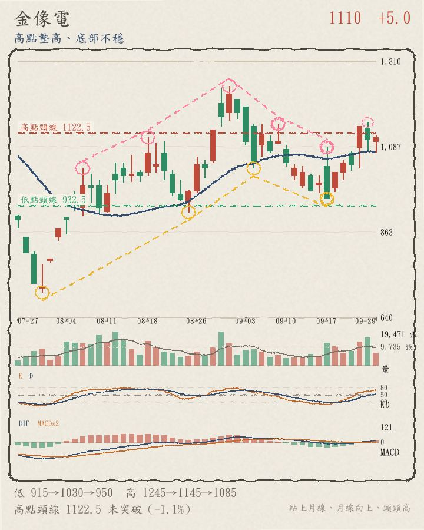
12:31 盤中 1110（+0.45%），比加權指數強 1.17 個百分點、站上月線 1074.7，離高點頸線 1122.5 還差 1.1%，高點還在墊高（但底部沒同步墊高）。
- 月線位置：現價 1110 在月線 1074.7 之上（+3.3%）；5 日線 1070 也在月線之下（短均在下）；月線向上
- 量能：以已過交易時間推估，今天成交量約是 20 日均量的 1.06 倍（量平），比 20 日均量大一些
- 關鍵價位：高點頸線 1122.5 還沒突破，差 1.1%；前一交易日高點 1150（低於 3.5%）；今天盤中高點 1115（低於 0.4%）；今天盤中低點 1070（高於 3.7%）
- 轉折結構：高點 1245、1145、1085 墊高（頭頭高），但低點 915、1030、950 沒有同步墊高；還沒確認的轉折低點 09-17 950；還沒確認的轉折高點 09-17 1085、09-24 1150（圖上虛線小圈）
台光電 2383 上市
4890 -160.0（-3.17%）
區間或轉弱 盤中成交值 71.64 億・全榜第 20 名（上市第 20 名）・相對大盤 -2.45
好條件 0/8：無
不好條件 6/8：今日下跌、相對大盤弱、在月線之下、貼近今日低點（1% 內）、跌破昨日低點、月線下彎
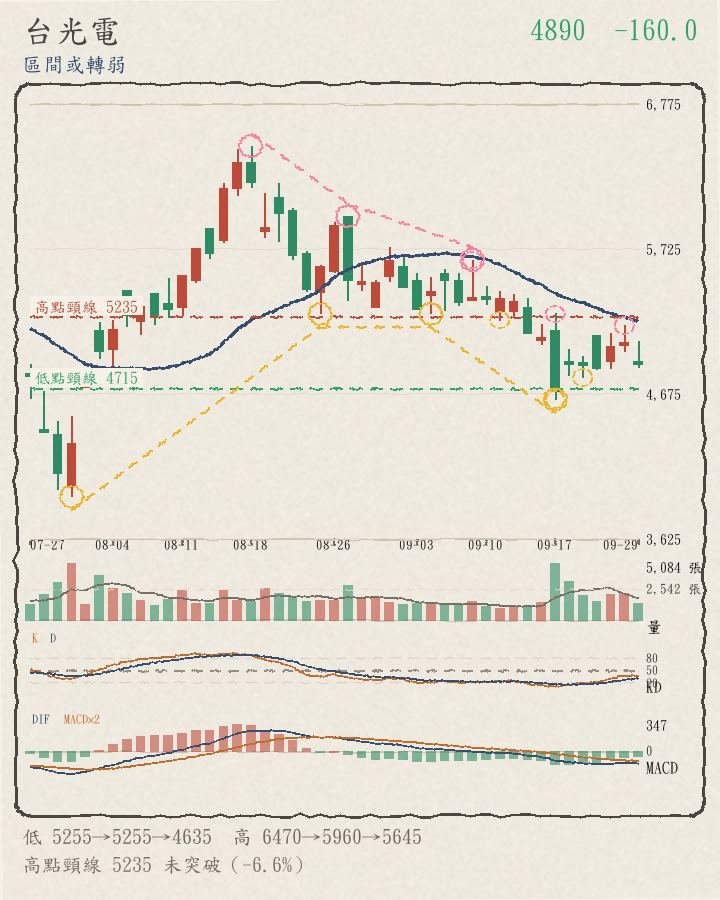
12:31 盤中 4890（-3.17%），比加權指數弱 2.45 個百分點、跌破月線 5233.5，離高點頸線 5235 還差 6.6%，轉折還沒走出明顯方向。
- 月線位置：現價 4890 在月線 5233.5 之下（-6.6%）；5 日線 4943 也在月線之下（短均在下）；月線向下
- 量能：以已過交易時間推估，今天成交量約是 20 日均量的 0.99 倍（量平），跟 20 日均量差不多
- 關鍵價位：高點頸線 5235 還沒突破，差 6.6%；前一交易日高點 5170（低於 5.4%）；今天盤中高點 5055（低於 3.3%）；今天盤中低點 4870（高於 0.4%）
- 轉折結構：低點 5255、5255、4635 與高點 6470、5960、5645 都沒有明顯遞增，屬於區間震盪或轉弱；還沒確認的轉折低點 09-17 4635、09-21 4795；還沒確認的轉折高點 09-17 5255、09-24 5170（圖上虛線小圈）
量平
↑ 回上方清單
大立光 3008 上市
6010 -235.0（-3.76%）
高點墊高、底部不穩 盤中成交值 70.38 億・全榜第 21 名（上市第 21 名）・相對大盤 -3.04
好條件 2/8：月線向上、頭頭高
不好條件 4/8：今日下跌、相對大盤弱、在月線之下、跌破昨日低點
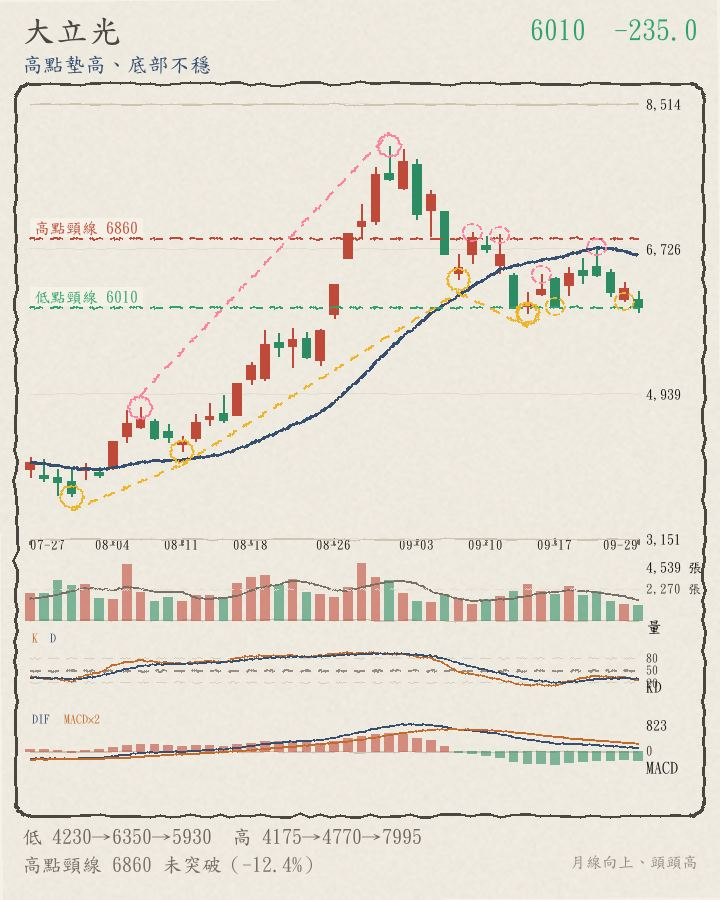
12:31 盤中 6010（-3.76%），比加權指數弱 3.04 個百分點、跌破月線 6701.5，離高點頸線 6860 還差 12.4%，高點還在墊高（但底部沒同步墊高）。
- 月線位置：現價 6010 在月線 6701.5 之下（-10.3%）；5 日線 6334 也在月線之下（短均在下）；月線向上
- 量能：以已過交易時間推估，今天成交量約是 20 日均量的 0.67 倍（量縮），比 20 日均量少很多
- 關鍵價位：高點頸線 6860 還沒突破，差 12.4%；前一交易日高點 6310（低於 4.8%）；今天盤中高點 6205（低於 3.1%）；今天盤中低點 5940（高於 1.2%）
- 轉折結構：高點 4175、4770、7995 墊高（頭頭高），但低點 4230、6350、5930 沒有同步墊高；還沒確認的轉折低點 09-17 6020、09-24 6080；還沒確認的轉折高點 09-16 6415、09-22 6750（圖上虛線小圈）
環球晶 6488 上櫃
957 +9.0（+0.95%）
區間或轉弱 盤中成交值 69.88 億・全榜第 22 名（上櫃第 1 名）・相對大盤 +1.67
好條件 3/8：站上月線、相對大盤強、守住今日高檔（距今日高點 1% 內）
不好條件 1/8：月線下彎
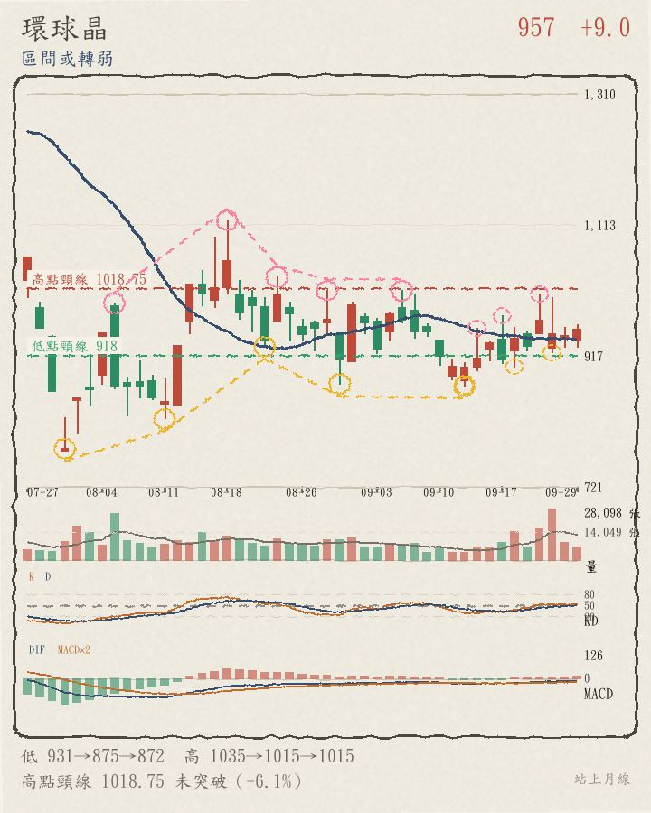
12:31 盤中 957（+0.95%），比加權指數強 1.67 個百分點、站上月線 943，離高點頸線 1018.75 還差 6.1%，轉折還沒走出明顯方向。
- 月線位置：現價 957 在月線 943 之上（+1.5%）；5 日線 948.8 也在月線之上（短均在上）；月線向下
- 量能：以已過交易時間推估，今天成交量約是 20 日均量的 0.97 倍（量平），跟 20 日均量差不多
- 關鍵價位：高點頸線 1018.75 還沒突破，差 6.1%；前一交易日高點 960（低於 0.3%）；今天盤中高點 964（低於 0.7%）；今天盤中低點 930（高於 2.9%）
- 轉折結構：低點 931、875、872 與高點 1035、1015、1015 都沒有明顯遞增，屬於區間震盪或轉弱；還沒確認的轉折低點 09-18 901、09-23 922；還沒確認的轉折高點 09-17 977、09-22 1010（圖上虛線小圈）
合晶 6182 上櫃
122 +1.5（+1.24%）
高點墊高、底部不穩 盤中成交值 68.13 億・全榜第 23 名（上櫃第 2 名）・相對大盤 +1.96
好條件 5/8：站上月線、月線向上、頭頭高、相對大盤強、攻擊量（量增＋上漲）
不好條件 0/8：無
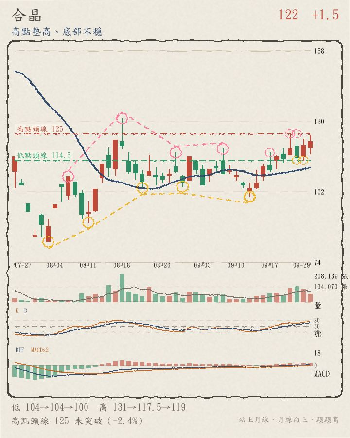
12:31 盤中 122（+1.24%），比加權指數強 1.96 個百分點、站上月線 110.95，離高點頸線 125 還差 2.4%，高點還在墊高（但底部沒同步墊高）。
- 月線位置：現價 122 在月線 110.95 之上（+10.0%）；5 日線 117.2 也在月線之上（短均在上）；月線向上
- 量能：以已過交易時間推估，今天成交量約是 20 日均量的 1.42 倍（量增），比 20 日均量大不少；上漲又量增，量價配合
- 關鍵價位：高點頸線 125 還沒突破，差 2.4%；前一交易日高點 123（低於 0.8%）；今天盤中高點 124.5（低於 2.0%）；今天盤中低點 117（高於 4.3%）
- 轉折結構：高點 131、117.5、119 墊高（頭頭高），但低點 103.5、104、100 沒有同步墊高；還沒確認的轉折低點 09-23 114.5、09-24 114.5；還沒確認的轉折高點 09-22 125、09-23 125（圖上虛線小圈）
台燿 6274 上櫃
1475 -20.0（-1.34%）
高點墊高、底部不穩 盤中成交值 68.04 億・全榜第 24 名（上櫃第 3 名）・相對大盤 -0.62
好條件 2/8：站上月線、頭頭高
不好條件 4/8：今日下跌、相對大盤弱、貼近今日低點（1% 內）、月線下彎
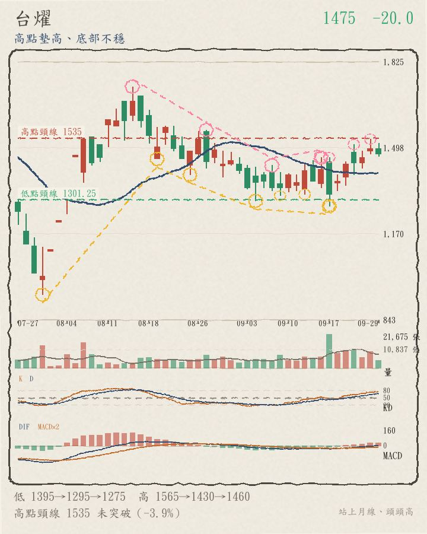
12:31 盤中 1475（-1.34%），比加權指數弱 0.62 個百分點、站上月線 1401.5，離高點頸線 1535 還差 3.9%，高點還在墊高（但底部沒同步墊高）。
- 月線位置：現價 1475 在月線 1401.5 之上（+5.2%）；5 日線 1440 也在月線之上（短均在上）；月線向下
- 量能：以已過交易時間推估，今天成交量約是 20 日均量的 0.81 倍（量平），比 20 日均量少很多
- 關鍵價位：高點頸線 1535 還沒突破，差 3.9%；前一交易日高點 1530（低於 3.6%）；今天盤中高點 1515（低於 2.6%）；今天盤中低點 1465（高於 0.7%）
- 轉折結構：高點 1565、1430、1460 墊高（頭頭高），但低點 1395、1295、1275 沒有同步墊高；還沒確認的轉折低點 09-14 1320、09-17 1275；還沒確認的轉折高點 09-22 1510、09-24 1530（圖上虛線小圈）
日月光投控 3711 上市
684 -15.0（-2.15%）
上升趨勢（底底高＋頭頭高） 盤中成交值 67.83 億・全榜第 25 名（上市第 22 名）・相對大盤 -1.43
好條件 4/8：站上月線、月線向上、底底高、頭頭高
不好條件 3/8：今日下跌、相對大盤弱、貼近今日低點（1% 內）
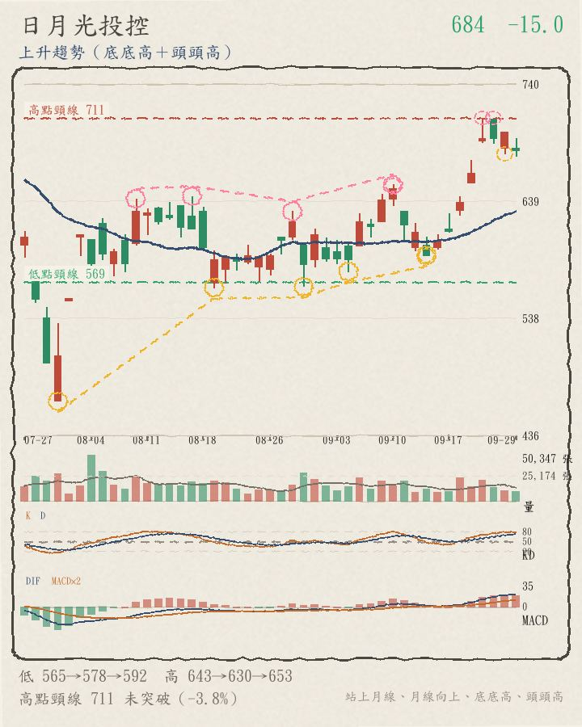
12:31 盤中 684（-2.15%），比加權指數弱 1.43 個百分點、站上月線 626.85，離高點頸線 711 還差 3.8%，轉折結構仍是底底高＋頭頭高。
- 月線位置：現價 684 在月線 626.85 之上（+9.1%）；5 日線 677.2 也在月線之上（短均在上）；月線向上
- 量能：以已過交易時間推估，今天成交量約是 20 日均量的 0.74 倍（量平），比 20 日均量少很多
- 關鍵價位：高點頸線 711 還沒突破，差 3.8%；前一交易日高點 699（低於 2.1%）；今天盤中高點 693（低於 1.3%）；今天盤中低點 678（高於 0.9%）
- 轉折結構：低點 565、578、592 一路墊高、高點 643、630、653 也一路墊高，是底底高＋頭頭高；還沒確認的轉折低點 09-15 592、09-24 680；還沒確認的轉折高點 09-22 711、09-23 711（圖上虛線小圈）
京元電子 2449 上市
295 -16.0（-5.14%）
高點墊高、底部不穩 盤中成交值 67.13 億・全榜第 26 名（上市第 23 名）・相對大盤 -4.42
好條件 4/8：站上月線、月線向上、頭頭高、突破頸線
不好條件 4/8：今日下跌、相對大盤弱、貼近今日低點（1% 內）、跌破昨日低點
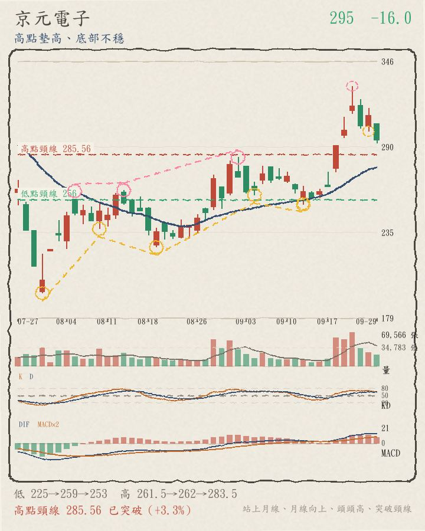
12:31 盤中 295（-5.14%），比加權指數弱 4.42 個百分點、站上月線 275.775，已突破高點頸線 285.56，高點還在墊高（但底部沒同步墊高）。
- 月線位置：現價 295 在月線 275.775 之上（+7.0%）；5 日線 305 也在月線之上（短均在上）；月線向上
- 量能：以已過交易時間推估，今天成交量約是 20 日均量的 1.03 倍（量平），跟 20 日均量差不多
- 關鍵價位：高點頸線 285.56 已站上；前一交易日高點 315.5（低於 6.5%）；今天盤中高點 305.5（低於 3.4%）；今天盤中低點 293（高於 0.7%）
- 轉折結構：高點 261.5、262、283.5 墊高（頭頭高），但低點 225、259、253 沒有同步墊高；還沒確認的轉折低點 09-14 253、09-24 300.5；還沒確認的轉折高點 09-22 330（圖上虛線小圈）
高力 8996 上市
1570 +40.0（+2.61%）
上升趨勢（底底高＋頭頭高） 盤中成交值 64.62 億・全榜第 27 名（上市第 24 名）・相對大盤 +3.33
好條件 7/8：站上月線、月線向上、底底高、頭頭高、突破頸線、相對大盤強、攻擊量（量增＋上漲）
不好條件 0/8：無
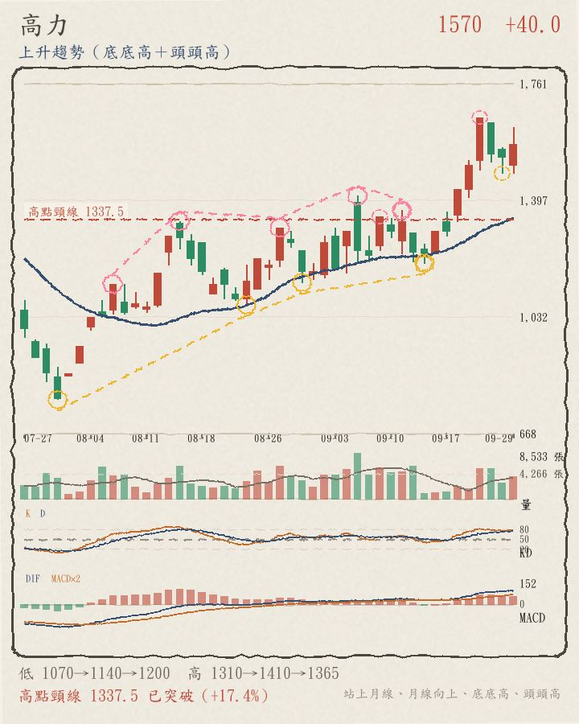
12:31 盤中 1570（+2.61%），比加權指數強 3.33 個百分點、站上月線 1326，已突破高點頸線 1337.5，轉折結構仍是底底高＋頭頭高。
- 月線位置：現價 1570 在月線 1326 之上（+18.4%）；5 日線 1532 也在月線之上（短均在上）；月線向上
- 量能：以已過交易時間推估，今天成交量約是 20 日均量的 1.27 倍（量增），比 20 日均量大不少；上漲又量增，量價配合
- 關鍵價位：高點頸線 1337.5 已站上；前一交易日高點 1560（高於 0.6%）；今天盤中高點 1625（低於 3.4%）；今天盤中低點 1480（高於 6.1%）
- 轉折結構：低點 1070、1140、1200 一路墊高、高點 1310、1410、1365 也一路墊高，是底底高＋頭頭高；還沒確認的轉折低點 09-15 1200、09-24 1480；還沒確認的轉折高點 09-11 1365、09-22 1655（圖上虛線小圈）
晶技 3042 上市
209 +6.0（+2.96%）
高點墊高、底部不穩 盤中成交值 60.94 億・全榜第 28 名（上市第 25 名）・相對大盤 +3.68
好條件 6/8：站上月線、月線向上、頭頭高、突破頸線、相對大盤強、攻擊量（量增＋上漲）
不好條件 0/8：無
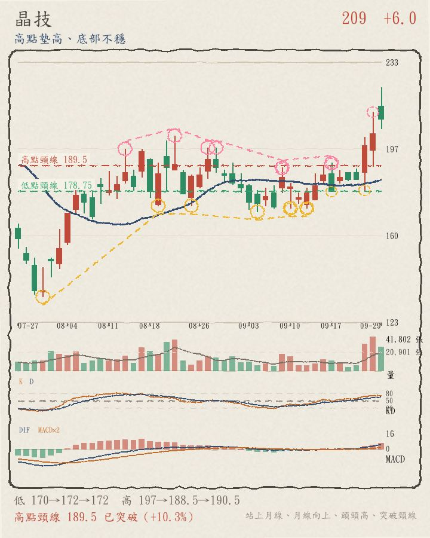
12:31 盤中 209（+2.96%），比加權指數強 3.68 個百分點、站上月線 182.425，已突破高點頸線 189.5，高點還在墊高（但底部沒同步墊高）。
- 月線位置：現價 209 在月線 182.425 之上（+14.6%）；5 日線 190.5 也在月線之上（短均在上）；月線向上
- 量能：以已過交易時間推估，今天成交量約是 20 日均量的 3.11 倍（爆量），比 20 日均量大不少；上漲又量增，量價配合
- 關鍵價位：高點頸線 189.5 已站上；前一交易日高點 212（低於 1.4%）；今天盤中高點 222.5（低於 6.1%）；今天盤中低點 205（高於 2.0%）
- 轉折結構：高點 197、188.5、190.5 墊高（頭頭高），但低點 170、171.5、171.5 沒有同步墊高；還沒確認的轉折低點 09-17 178.5、09-23 179；還沒確認的轉折高點 09-17 190.5、09-24 212（圖上虛線小圈）
穩懋 3105 上櫃
492 -10.0（-1.99%）
高點墊高、底部不穩 盤中成交值 58.81 億・全榜第 29 名（上櫃第 4 名）・相對大盤 -1.27
好條件 3/8：站上月線、月線向上、頭頭高
不好條件 2/8：今日下跌、相對大盤弱
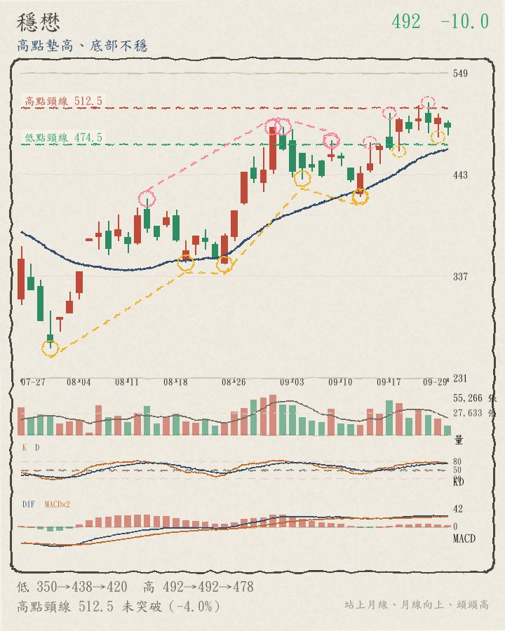
12:31 盤中 492（-1.99%），比加權指數弱 1.27 個百分點、站上月線 466.55，離高點頸線 512.5 還差 4.0%，高點還在墊高（但底部沒同步墊高）。
- 月線位置：現價 492 在月線 466.55 之上（+5.5%）；5 日線 498.1 也在月線之上（短均在上）；月線向上
- 量能：以已過交易時間推估，今天成交量約是 20 日均量的 0.47 倍（量縮），比 20 日均量少很多
- 關鍵價位：高點頸線 512.5 還沒突破，差 4.0%；前一交易日高點 506（低於 2.8%）；今天盤中高點 498.5（低於 1.3%）；今天盤中低點 484.5（高於 1.5%）
- 轉折結構：高點 492、492、478 墊高（頭頭高），但低點 349.5、438.5、420 沒有同步墊高；還沒確認的轉折低點 09-18 467、09-24 482；還沒確認的轉折高點 09-17 507、09-23 518（圖上虛線小圈）
力旺 3529 上櫃
3330 +100.0（+3.10%）
上升趨勢（底底高＋頭頭高） 盤中成交值 57.81 億・全榜第 30 名（上櫃第 5 名）・相對大盤 +3.82
好條件 7/8：站上月線、月線向上、底底高、頭頭高、突破頸線、相對大盤強、攻擊量（量增＋上漲）
不好條件 0/8：無
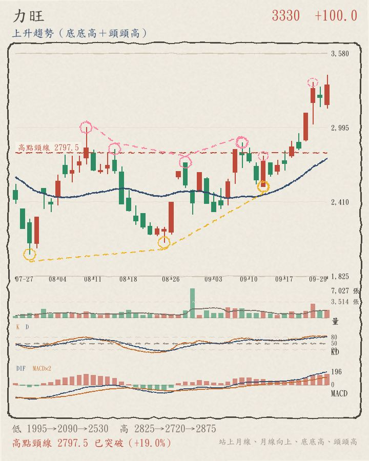
12:31 盤中 3330（+3.10%），比加權指數強 3.82 個百分點、站上月線 2713，已突破高點頸線 2797.5，轉折結構仍是底底高＋頭頭高。
- 月線位置：現價 3330 在月線 2713 之上（+22.7%）；5 日線 3064 也在月線之上（短均在上）；月線向上
- 量能：以已過交易時間推估，今天成交量約是 20 日均量的 1.34 倍（量增），比 20 日均量大不少；上漲又量增，量價配合
- 關鍵價位：高點頸線 2797.5 已站上；前一交易日高點 3315（高於 0.5%）；今天盤中高點 3410（低於 2.3%）；今天盤中低點 3145（高於 5.9%）
- 轉折結構：低點 1995、2090、2530 一路墊高、高點 2825、2720、2875 也一路墊高，是底底高＋頭頭高；還沒確認的轉折低點 09-14 2530；還沒確認的轉折高點 09-14 2770、09-23 3350（圖上虛線小圈）
華邦電 2344 上市
173 +1.5（+0.87%）
區間或轉弱 盤中成交值 57.49 億・全榜第 31 名（上市第 26 名）・相對大盤 +1.59
好條件 2/8：相對大盤強、守住今日高檔（距今日高點 1% 內）
不好條件 2/8：在月線之下、月線下彎
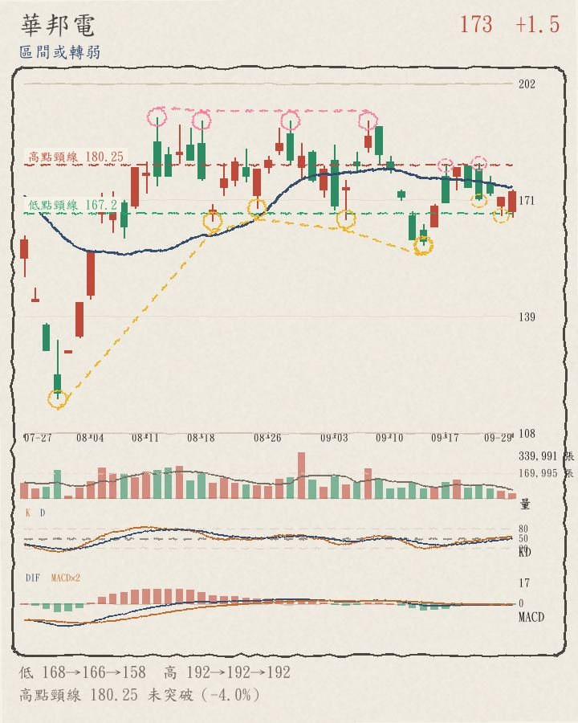
12:31 盤中 173（+0.87%），比加權指數強 1.59 個百分點、跌破月線 174.55，離高點頸線 180.25 還差 4.0%，轉折還沒走出明顯方向。
- 月線位置：現價 173 在月線 174.55 之下（-0.9%）；5 日線 173.7 也在月線之下（短均在下）；月線向下
- 量能：以已過交易時間推估，今天成交量約是 20 日均量的 0.34 倍（量縮），比 20 日均量少很多；上漲但量縮，量價背離
- 關鍵價位：高點頸線 180.25 還沒突破，差 4.0%；前一交易日高點 171.5（高於 0.9%）；今天盤中高點 173.5（低於 0.3%）；今天盤中低點 166（高於 4.2%）
- 轉折結構：低點 168.5、165.5、158.5 與高點 192、192、192 都沒有明顯遞增，屬於區間震盪或轉弱；還沒確認的轉折低點 09-22 170.5、09-24 166.5；還沒確認的轉折高點 09-17 180、09-22 180.5（圖上虛線小圈）
創意 3443 上市
7970 -555.0（-6.51%）
上升趨勢（底底高＋頭頭高） 盤中成交值 56.43 億・全榜第 32 名（上市第 27 名）・相對大盤 -5.79
好條件 5/8：站上月線、月線向上、底底高、頭頭高、突破頸線
不好條件 4/8：今日下跌、相對大盤弱、貼近今日低點（1% 內）、跌破昨日低點
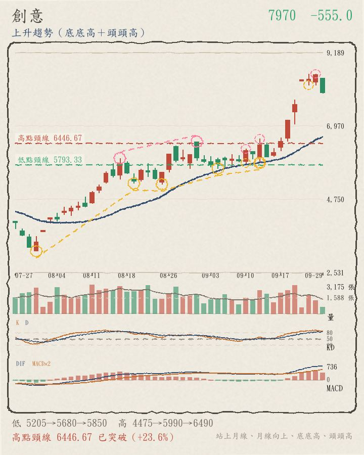
12:31 盤中 7970（-6.51%），比加權指數弱 5.79 個百分點、站上月線 6546.75，已突破高點頸線 6446.67，轉折結構仍是底底高＋頭頭高。
- 月線位置：現價 7970 在月線 6546.75 之上（+21.7%）；5 日線 8010 也在月線之上（短均在上）；月線向上
- 量能：以已過交易時間推估，今天成交量約是 20 日均量的 0.49 倍（量縮），比 20 日均量少很多
- 關鍵價位：高點頸線 6446.67 已站上；前一交易日高點 8545（低於 6.7%）；今天盤中高點 8415（低於 5.3%）；今天盤中低點 7950（高於 0.3%）
- 轉折結構：低點 5205、5680、5850 一路墊高、高點 4475、5990、6490 也一路墊高，是底底高＋頭頭高；還沒確認的轉折低點 09-14 5850、09-23 8200；還沒確認的轉折高點 09-14 6575、09-24 8545（圖上虛線小圈）
智邦 2345 上市
1815 -80.0（-4.22%）
區間或轉弱 盤中成交值 52.67 億・全榜第 33 名（上市第 28 名）・相對大盤 -3.50
好條件 0/8：無
不好條件 6/8：今日下跌、相對大盤弱、在月線之下、貼近今日低點（1% 內）、跌破昨日低點、月線下彎
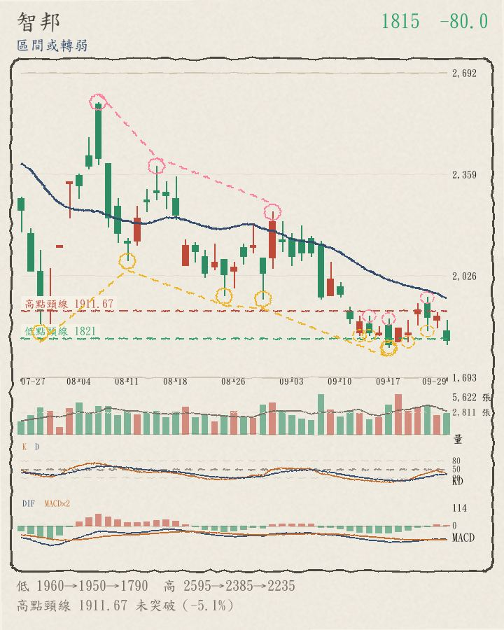
12:31 盤中 1815（-4.22%），比加權指數弱 3.50 個百分點、跌破月線 1968.25，離高點頸線 1911.67 還差 5.1%，轉折還沒走出明顯方向。
- 月線位置：現價 1815 在月線 1968.25 之下（-7.8%）；5 日線 1879 也在月線之下（短均在下）；月線向下
- 量能：以已過交易時間推估，今天成交量約是 20 日均量的 1.13 倍（量增），比 20 日均量大一些；下跌卻量增，量價背離
- 關鍵價位：高點頸線 1911.67 還沒突破，差 5.1%；前一交易日高點 1905（低於 4.7%）；今天盤中高點 1880（低於 3.5%）；今天盤中低點 1800（高於 0.8%）
- 轉折結構：低點 1960、1950、1790 與高點 2595、2385、2235 都沒有明顯遞增，屬於區間震盪或轉弱；還沒確認的轉折低點 09-21 1810、09-23 1845；還沒確認的轉折高點 09-17 1885、09-23 1955（圖上虛線小圈）
量增
↑ 回上方清單
世界 5347 上櫃
180 +9.5（+5.57%）
高點墊高、底部不穩 盤中成交值 52.28 億・全榜第 34 名（上櫃第 6 名）・相對大盤 +6.29
好條件 6/8：站上月線、月線向上、頭頭高、突破頸線、相對大盤強、攻擊量（量增＋上漲）
不好條件 0/8：無
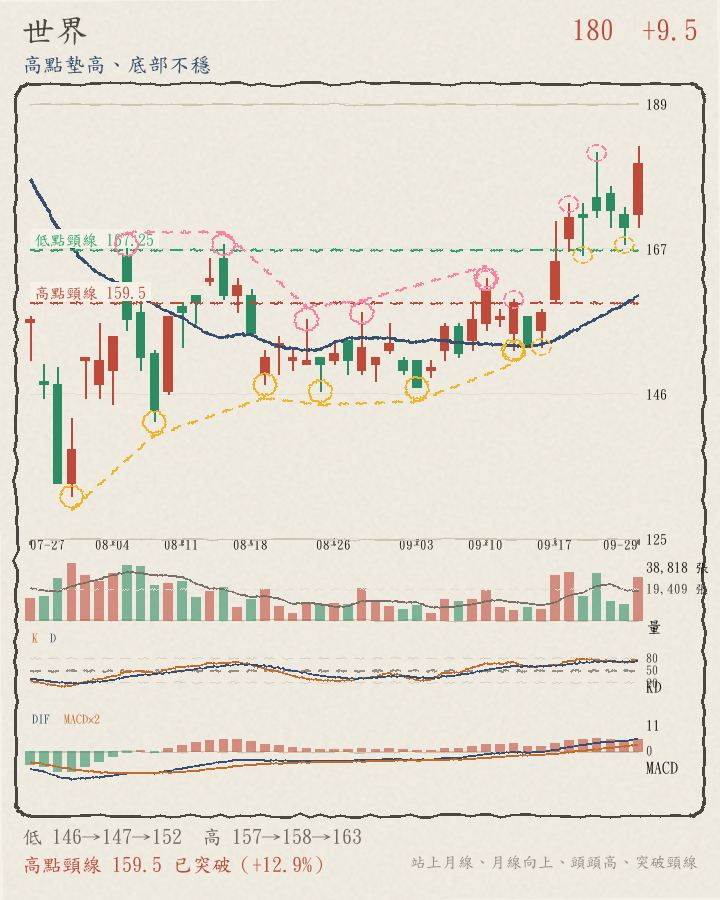
12:31 盤中 180（+5.57%），比加權指數強 6.29 個百分點、站上月線 159.25，已突破高點頸線 159.5，高點還在墊高（但底部沒同步墊高）。
- 月線位置：現價 180 在月線 159.25 之上（+13.0%）；5 日線 172.1 也在月線之上（短均在上）；月線向上
- 量能：以已過交易時間推估，今天成交量約是 20 日均量的 2.55 倍（爆量），比 20 日均量大不少；上漲又量增，量價配合
- 關鍵價位：高點頸線 159.5 已站上；前一交易日高點 173.5（高於 3.7%）；今天盤中高點 182.5（低於 1.4%）；今天盤中低點 170.5（高於 5.6%）
- 轉折結構：高點 157、158、163 墊高（頭頭高），但低點 146.5、147、152.5 沒有同步墊高；還沒確認的轉折低點 09-21 166.5、09-24 168；還沒確認的轉折高點 09-18 174、09-22 181.5（圖上虛線小圈）
金居 8358 上櫃
499 -12.0（-2.35%）
底部墊高、未過前高 盤中成交值 51.79 億・全榜第 35 名（上櫃第 7 名）・相對大盤 -1.63
好條件 2/8：月線向上、底底高
不好條件 4/8：今日下跌、相對大盤弱、在月線之下、貼近今日低點（1% 內）

12:31 盤中 499（-2.35%），比加權指數弱 1.63 個百分點、跌破月線 506.4，離高點頸線 532.5 還差 6.3%，底部還在墊高（但高點沒同步創高）。
- 月線位置：現價 499 在月線 506.4 之下（-1.5%）；5 日線 498.1 也在月線之下（短均在下）；月線向上
- 量能：以已過交易時間推估，今天成交量約是 20 日均量的 0.83 倍（量平），比 20 日均量少很多
- 關鍵價位：高點頸線 532.5 還沒突破，差 6.3%；前一交易日高點 511（低於 2.3%）；今天盤中高點 519（低於 3.9%）；今天盤中低點 495.5（高於 0.7%）
- 轉折結構：低點 399、469.5、477 墊高（底底高），但高點 462、564、535 沒有同步創高；還沒確認的轉折低點 09-17 477.5、09-23 490；還沒確認的轉折高點 09-14 530、09-24 511（圖上虛線小圈）
鴻海 2317 上市
251 +0.5（+0.20%）
區間或轉弱 盤中成交值 50.51 億・全榜第 36 名（上市第 29 名）・相對大盤 +0.92
好條件 2/8：月線向上、相對大盤強
不好條件 1/8：在月線之下
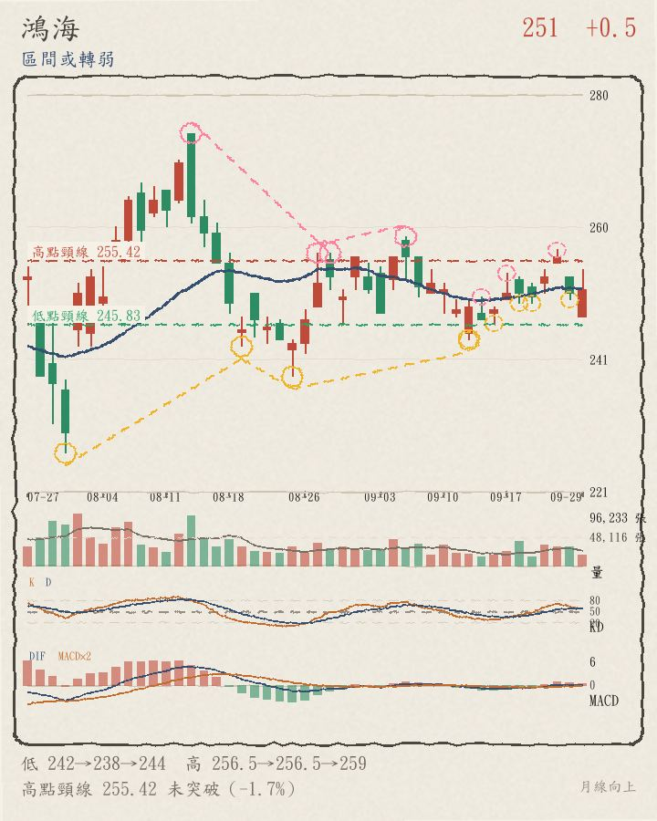
12:31 盤中 251（+0.20%），比加權指數強 0.92 個百分點、跌破月線 251.275，離高點頸線 255.42 還差 1.7%，轉折還沒走出明顯方向。
- 月線位置：現價 251 在月線 251.275 之下（-0.1%）；5 日線 252 也在月線之上（短均在上）；月線向上
- 量能：以已過交易時間推估，今天成交量約是 20 日均量的 0.85 倍（量平），比 20 日均量少一些；上漲但量縮，量價背離
- 關鍵價位：高點頸線 255.42 還沒突破，差 1.7%；前一交易日高點 253（低於 0.8%）；今天盤中高點 254（低於 1.2%）；今天盤中低點 247（高於 1.6%）
- 轉折結構：低點 242.5、238、243.5 與高點 256.5、256.5、259 都沒有明顯遞增，屬於區間震盪或轉弱；還沒確認的轉折低點 09-21 249、09-24 249.5；還沒確認的轉折高點 09-17 253.5、09-23 257（圖上虛線小圈）
昇陽半導體 8028 上市
290 +21.0（+7.81%）
高點墊高、底部不穩 盤中成交值 48.84 億・全榜第 37 名（上市第 30 名）・相對大盤 +8.53
好條件 6/8：站上月線、月線向上、頭頭高、突破頸線、相對大盤強、攻擊量（量增＋上漲）
不好條件 0/8：無
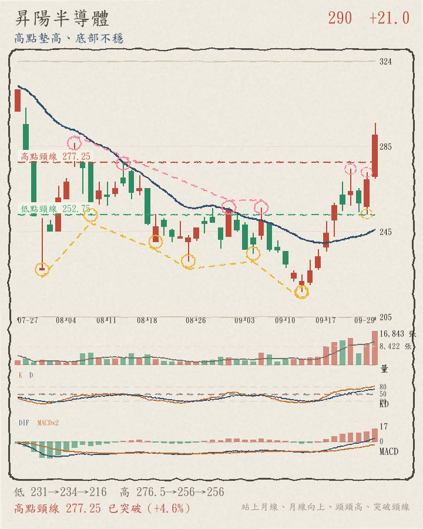
12:31 盤中 290（+7.81%），比加權指數強 8.53 個百分點、站上月線 243.65，已突破高點頸線 277.25，高點還在墊高（但底部沒同步墊高）。
- 月線位置：現價 290 在月線 243.65 之上（+19.0%）；5 日線 261 也在月線之上（短均在上）；月線向上
- 量能：以已過交易時間推估，今天成交量約是 20 日均量的 4.59 倍（爆量），比 20 日均量大不少；上漲又量增，量價配合
- 關鍵價位：高點頸線 277.25 已站上；前一交易日高點 272.5（高於 6.4%）；今天盤中高點 295.5（低於 1.9%）；今天盤中低點 269.5（高於 7.6%）
- 轉折結構：高點 276.5、256、256 墊高（頭頭高），但低點 231、234.5、216.5 沒有同步墊高；還沒確認的轉折低點 09-14 216.5、09-24 253；還沒確認的轉折高點 09-22 274、09-24 272.5（圖上虛線小圈）
雙鴻 3324 上櫃
1620 -90.0（-5.26%）
高點墊高、底部不穩 盤中成交值 47.79 億・全榜第 38 名（上櫃第 8 名）・相對大盤 -4.54
好條件 4/8：站上月線、月線向上、頭頭高、突破頸線
不好條件 2/8：今日下跌、相對大盤弱
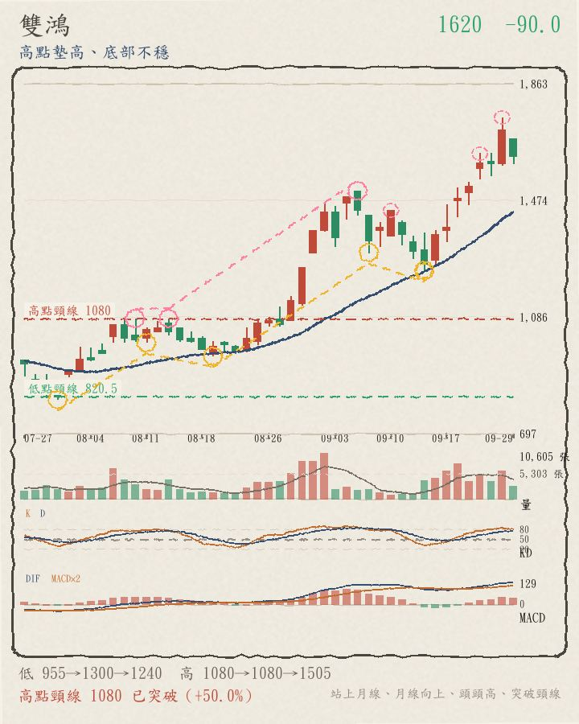
12:31 盤中 1620（-5.26%），比加權指數弱 4.54 個百分點、站上月線 1410.75，已突破高點頸線 1080，高點還在墊高（但底部沒同步墊高）。
- 月線位置：現價 1620 在月線 1410.75 之上（+14.8%）；5 日線 1581 也在月線之上（短均在上）；月線向上
- 量能：以已過交易時間推估，今天成交量約是 20 日均量的 0.86 倍（量平），比 20 日均量少一些
- 關鍵價位：高點頸線 1080 已站上；前一交易日高點 1750（低於 7.4%）；今天盤中高點 1680（低於 3.6%）；今天盤中低點 1595（高於 1.6%）
- 轉折結構：高點 1080、1080、1505 墊高（頭頭高），但低點 955、1300、1240 沒有同步墊高；還沒確認的轉折低點 09-15 1240；還沒確認的轉折高點 09-22 1630、09-24 1750（圖上虛線小圈）
緯創 3231 上市
185.5 +1.0（+0.54%）
底部墊高、未過前高 盤中成交值 46.29 億・全榜第 39 名（上市第 31 名）・相對大盤 +1.26
好條件 5/8：站上月線、月線向上、底底高、相對大盤強、守住今日高檔（距今日高點 1% 內）
不好條件 0/8：無
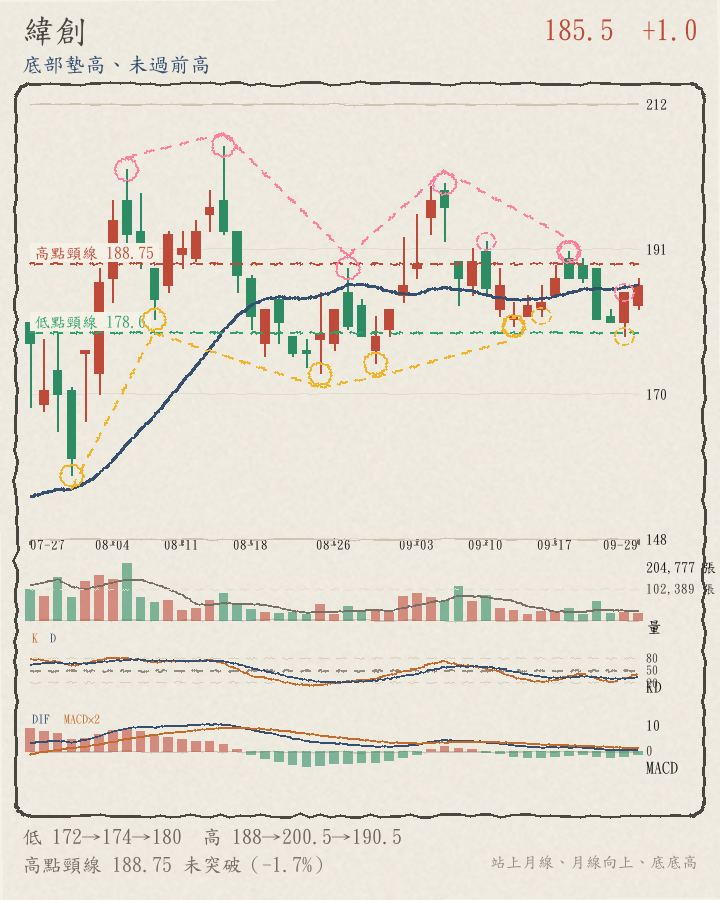
12:31 盤中 185.5（+0.54%），比加權指數強 1.26 個百分點、站上月線 185.2，離高點頸線 188.75 還差 1.7%，底部還在墊高（但高點沒同步創高）。
- 月線位置：現價 185.5 在月線 185.2 之上（+0.2%）；5 日線 183.6 也在月線之下（短均在下）；月線向上
- 量能：以已過交易時間推估，今天成交量約是 20 日均量的 0.60 倍（量縮），比 20 日均量少很多；上漲但量縮，量價背離
- 關鍵價位：高點頸線 188.75 還沒突破，差 1.7%；前一交易日高點 184.5（高於 0.5%）；今天盤中高點 186.5（低於 0.5%）；今天盤中低點 182（高於 1.9%）
- 轉折結構：低點 172.5、174、179.5 墊高（底底高），但高點 188、200.5、190.5 沒有同步創高；還沒確認的轉折低點 09-16 181、09-24 178；還沒確認的轉折高點 09-18 190.5、09-24 184.5（圖上虛線小圈）
南茂 8150 上市
105.5 -6.5（-5.80%）
高點墊高、底部不穩 盤中成交值 44.14 億・全榜第 40 名（上市第 32 名）・相對大盤 -5.08
好條件 4/8：站上月線、月線向上、頭頭高、突破頸線
不好條件 4/8：今日下跌、相對大盤弱、量增下跌（出貨）、貼近今日低點（1% 內）
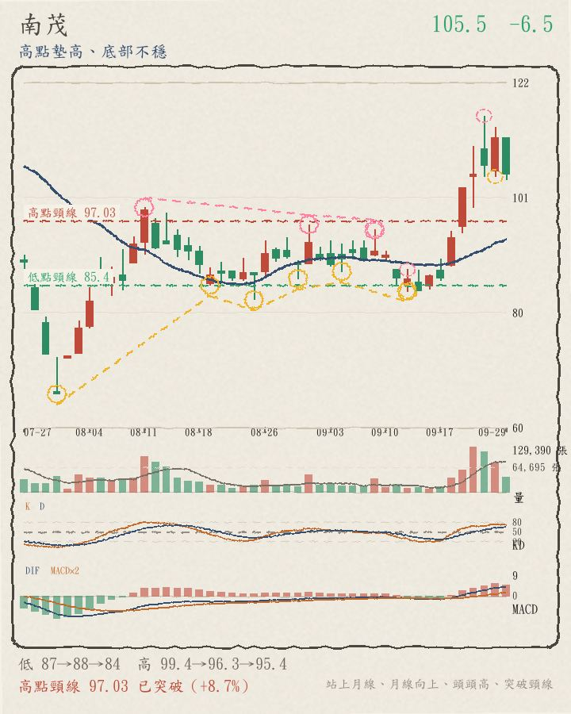
12:31 盤中 105.5（-5.80%），比加權指數弱 5.08 個百分點、站上月線 92.96，已突破高點頸線 97.03，高點還在墊高（但底部沒同步墊高）。
- 月線位置：現價 105.5 在月線 92.96 之上（+13.5%）；5 日線 104.3 也在月線之上（短均在上）；月線向上
- 量能：以已過交易時間推估，今天成交量約是 20 日均量的 1.63 倍（爆量），比 20 日均量大不少；下跌卻量增，量價背離
- 關鍵價位：高點頸線 97.03 已站上；前一交易日高點 114（低於 7.5%）；今天盤中高點 112（低於 5.8%）；今天盤中低點 104.5（高於 1.0%）
- 轉折結構：高點 99.4、96.3、95.4 墊高（頭頭高），但低點 86.6、87.9、84.3 沒有同步墊高；還沒確認的轉折低點 09-14 84.3、09-24 105；還沒確認的轉折高點 09-14 88.2、09-23 116（圖上虛線小圈）
萬潤 6187 上櫃
1310 +115.0（+9.62%）
區間或轉弱 盤中成交值 42.13 億・全榜第 41 名（上櫃第 9 名）・相對大盤 +10.34
好條件 4/8：站上月線、突破頸線、相對大盤強、攻擊量（量增＋上漲）
不好條件 1/8：月線下彎
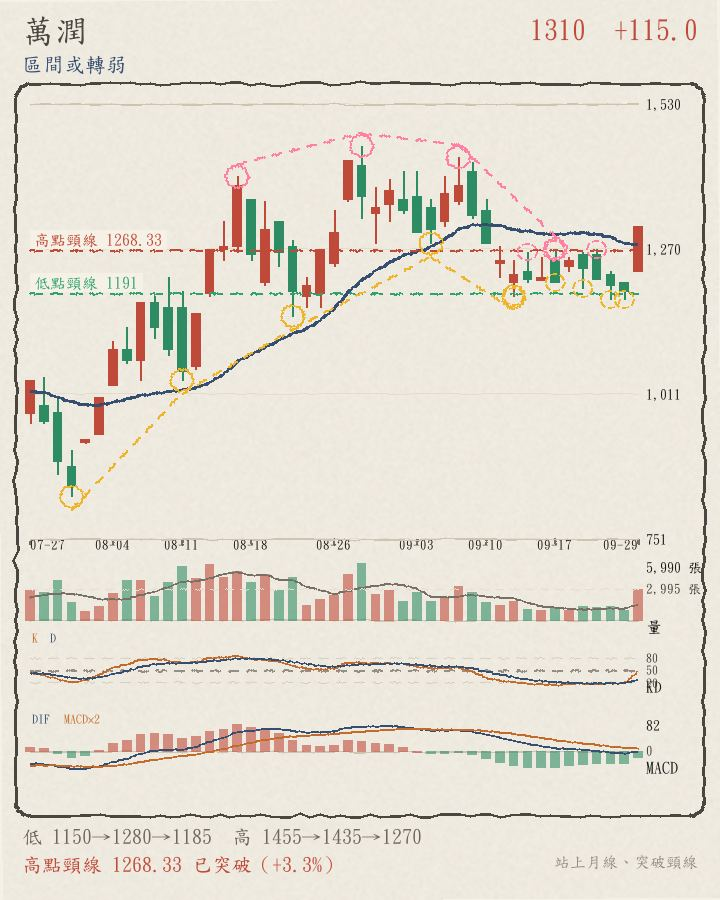
12:31 盤中 1310（+9.62%），比加權指數強 10.34 個百分點、站上月線 1280.75，已突破高點頸線 1268.33，轉折還沒走出明顯方向。
- 月線位置：現價 1310 在月線 1280.75 之上（+2.3%）；5 日線 1220 也在月線之下（短均在下）；月線向下
- 量能：以已過交易時間推估，今天成交量約是 20 日均量的 1.80 倍（爆量），比 20 日均量大不少；上漲又量增，量價配合
- 關鍵價位：高點頸線 1268.33 已站上；前一交易日高點 1210（高於 8.3%）；今天盤中高點 1310（高於 0.0%）；今天盤中低點 1230（高於 6.5%）
- 轉折結構：低點 1150、1280、1185 與高點 1455、1435、1270 都沒有明顯遞增，屬於區間震盪或轉弱；還沒確認的轉折低點 09-23 1180、09-24 1180；還沒確認的轉折高點 09-17 1270、09-22 1270（圖上虛線小圈）
群創 3481 上市
49.75 +0.2（+0.40%）
高點墊高、底部不穩 盤中成交值 40.28 億・全榜第 42 名（上市第 33 名）・相對大盤 +1.12
好條件 4/8：站上月線、月線向上、頭頭高、相對大盤強
不好條件 0/8：無
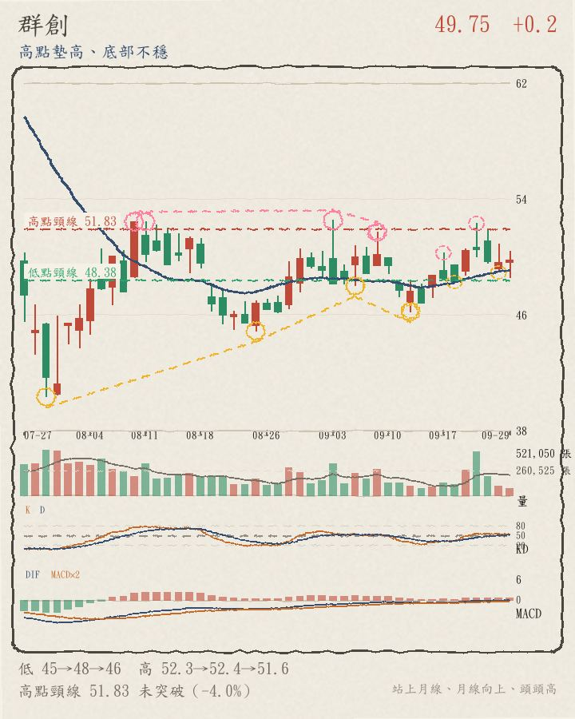
12:31 盤中 49.75（+0.40%），比加權指數強 1.12 個百分點、站上月線 48.962，離高點頸線 51.83 還差 4.0%，高點還在墊高（但底部沒同步墊高）。
- 月線位置：現價 49.75 在月線 48.962 之上（+1.6%）；5 日線 49.66 也在月線之上（短均在上）；月線向上
- 量能：以已過交易時間推估，今天成交量約是 20 日均量的 0.51 倍（量縮），比 20 日均量少很多；上漲但量縮，量價背離
- 關鍵價位：高點頸線 51.83 還沒突破，差 4.0%；前一交易日高點 50.8（低於 2.1%）；今天盤中高點 50.3（低於 1.1%）；今天盤中低點 48.55（高於 2.5%）
- 轉折結構：高點 52.3、52.4、51.6 墊高（頭頭高），但低點 44.95、48、46.25 沒有同步墊高；還沒確認的轉折低點 09-18 48.25、09-24 48.9；還沒確認的轉折高點 09-17 50.2、09-22 52.2（圖上虛線小圈）
致茂 2360 上市
2200 -95.0（-4.14%）
上升趨勢（底底高＋頭頭高） 盤中成交值 38.37 億・全榜第 43 名（上市第 34 名）・相對大盤 -3.42
好條件 4/8：站上月線、月線向上、底底高、頭頭高
不好條件 3/8：今日下跌、相對大盤弱、跌破昨日低點
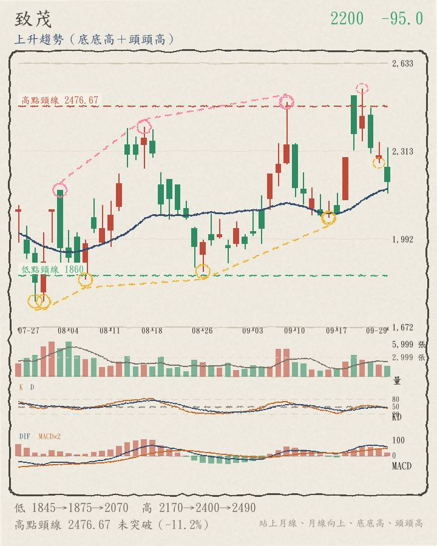
12:31 盤中 2200（-4.14%），比加權指數弱 3.42 個百分點、站上月線 2165.5，離高點頸線 2476.67 還差 11.2%，轉折結構仍是底底高＋頭頭高。
- 月線位置：現價 2200 在月線 2165.5 之上（+1.6%）；5 日線 2345 也在月線之上（短均在上）；月線向上
- 量能：以已過交易時間推估，今天成交量約是 20 日均量的 1.05 倍（量平），比 20 日均量大一些
- 關鍵價位：高點頸線 2476.67 還沒突破，差 11.2%；前一交易日高點 2345（低於 6.2%）；今天盤中高點 2325（低於 5.4%）；今天盤中低點 2160（高於 1.9%）
- 轉折結構：低點 1845、1875、2070 一路墊高、高點 2170、2400、2490 也一路墊高，是底底高＋頭頭高；還沒確認的轉折低點 09-16 2070、09-24 2270；還沒確認的轉折高點 09-09 2490、09-22 2540（圖上虛線小圈）
鴻勁 7769 上市
5580 -90.0（-1.59%）
區間或轉弱 盤中成交值 38.06 億・全榜第 44 名（上市第 35 名）・相對大盤 -0.87
好條件 0/8：無
不好條件 7/8：跌破前低、今日下跌、相對大盤弱、在月線之下、貼近今日低點（1% 內）、跌破昨日低點、月線下彎
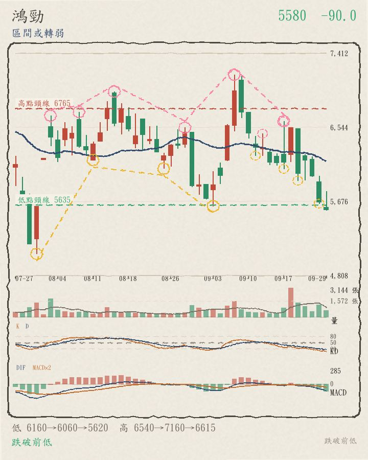
12:31 盤中 5580（-1.59%），比加權指數弱 0.87 個百分點、跌破月線 6193，離高點頸線 6765 還差 17.5%，轉折還沒走出明顯方向。
- 月線位置：現價 5580 在月線 6193 之下（-9.9%）；5 日線 6068 也在月線之下（短均在下）；月線向下
- 量能：以已過交易時間推估，今天成交量約是 20 日均量的 0.95 倍（量平），跟 20 日均量差不多
- 關鍵價位：已跌破前一個轉折低點；高點頸線 6765 還在現價上方 17.5%；前一交易日高點 5975（低於 6.6%）；今天盤中高點 5795（低於 3.7%）；今天盤中低點 5570（高於 0.2%）
- 轉折結構：低點 6160、6060、5620 與高點 6540、7160、6615 都沒有明顯遞增，屬於區間震盪或轉弱；還沒確認的轉折低點 09-21 5920、09-24 5650；還沒確認的轉折高點 09-14 6470、09-17 6615（圖上虛線小圈）
旺矽 6223 上櫃
5185 -230.0（-4.25%）
區間或轉弱 盤中成交值 37.59 億・全榜第 45 名（上櫃第 10 名）・相對大盤 -3.53
好條件 1/8：月線向上
不好條件 6/8：跌破前低、今日下跌、相對大盤弱、在月線之下、貼近今日低點（1% 內）、跌破昨日低點
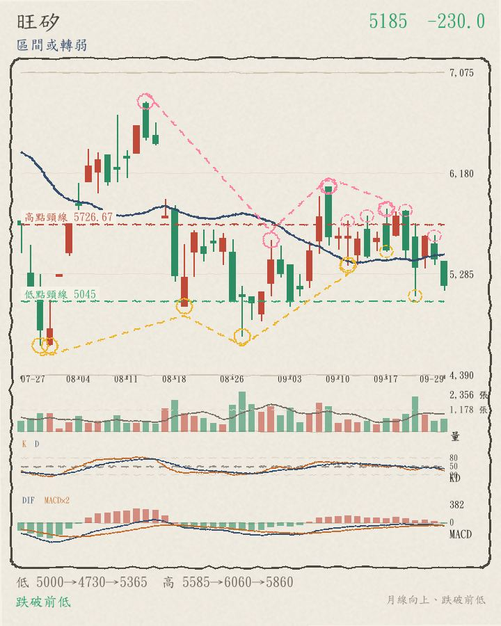
12:31 盤中 5185（-4.25%），比加權指數弱 3.53 個百分點、跌破月線 5450.5，離高點頸線 5726.67 還差 9.5%，轉折還沒走出明顯方向。
- 月線位置：現價 5185 在月線 5450.5 之下（-4.9%）；5 日線 5535 也在月線之上（短均在上）；月線向上
- 量能：以已過交易時間推估，今天成交量約是 20 日均量的 0.85 倍（量平），比 20 日均量少一些
- 關鍵價位：已跌破前一個轉折低點；高點頸線 5726.67 還在現價上方 9.5%；前一交易日高點 5625（低於 7.8%）；今天盤中高點 5400（低於 4.0%）；今天盤中低點 5140（高於 0.9%）
- 轉折結構：低點 5000、4730、5365 與高點 5585、6060、5860 都沒有明顯遞增，屬於區間震盪或轉弱；還沒確認的轉折低點 09-17 5485、09-22 5090；還沒確認的轉折高點 09-21 5850、09-24 5625（圖上虛線小圈）
川湖 2059 上市
12050 -300.0（-2.43%）
區間或轉弱 盤中成交值 37.11 億・全榜第 46 名（上市第 36 名）・相對大盤 -1.71
好條件 0/8：無
不好條件 5/8：今日下跌、相對大盤弱、在月線之下、跌破昨日低點、月線下彎
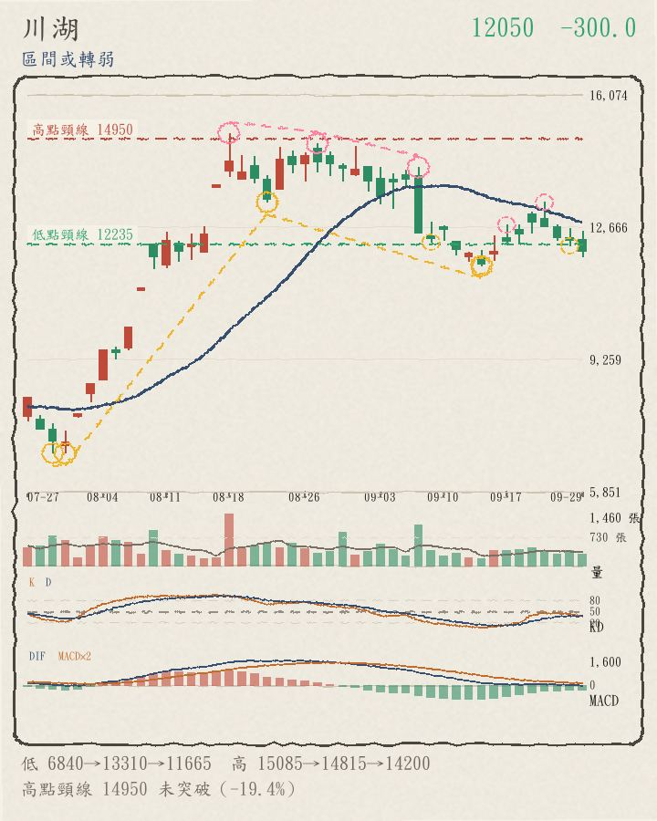
12:31 盤中 12050（-2.43%），比加權指數弱 1.71 個百分點、跌破月線 12903，離高點頸線 14950 還差 19.4%，轉折還沒走出明顯方向。
- 月線位置：現價 12050 在月線 12903 之下（-6.6%）；5 日線 12541 也在月線之下（短均在下）；月線向下
- 量能：以已過交易時間推估，今天成交量約是 20 日均量的 0.90 倍（量平），比 20 日均量少一些
- 關鍵價位：高點頸線 14950 還沒突破，差 19.4%；前一交易日高點 12640（低於 4.7%）；今天盤中高點 12550（低於 4.0%）；今天盤中低點 11900（高於 1.3%）
- 轉折結構：低點 6840、13310、11665 與高點 15085、14815、14200 都沒有明顯遞增，屬於區間震盪或轉弱；還沒確認的轉折低點 09-15 11665、09-24 12185；還沒確認的轉折高點 09-17 12730、09-22 13305（圖上虛線小圈）
量平
↑ 回上方清單
力積電 6770 上市
72.4 +0.4（+0.56%）
高點墊高、底部不穩 盤中成交值 35.23 億・全榜第 47 名（上市第 37 名）・相對大盤 +1.28
好條件 5/8：站上月線、月線向上、頭頭高、相對大盤強、守住今日高檔（距今日高點 1% 內）
不好條件 0/8：無
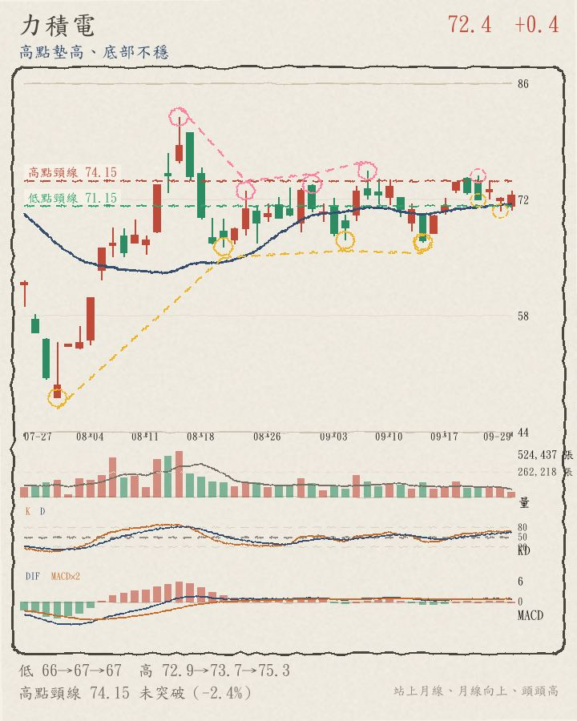
12:31 盤中 72.4（+0.56%），比加權指數強 1.28 個百分點、站上月線 71.235，離高點頸線 74.15 還差 2.4%，高點還在墊高（但底部沒同步墊高）。
- 月線位置：現價 72.4 在月線 71.235 之上（+1.6%）；5 日線 72.72 也在月線之上（短均在上）；月線向上
- 量能：以已過交易時間推估，今天成交量約是 20 日均量的 0.48 倍（量縮），比 20 日均量少很多；上漲但量縮，量價背離
- 關鍵價位：高點頸線 74.15 還沒突破，差 2.4%；前一交易日高點 72.1（高於 0.4%）；今天盤中高點 72.9（低於 0.7%）；今天盤中低點 70.6（高於 2.5%）
- 轉折結構：高點 72.9、73.7、75.3 墊高（頭頭高），但低點 66.2、67、66.7 沒有同步墊高；還沒確認的轉折低點 09-22 71.8、09-24 70.5；還沒確認的轉折高點 09-22 74.7（圖上虛線小圈）
愛普* 6531 上市
923 -70.0（-7.05%）
高點墊高、底部不穩 盤中成交值 34.03 億・全榜第 48 名（上市第 38 名）・相對大盤 -6.33
好條件 2/8：月線向上、頭頭高
不好條件 6/8：今日下跌、相對大盤弱、在月線之下、量增下跌（出貨）、貼近今日低點（1% 內）、跌破昨日低點
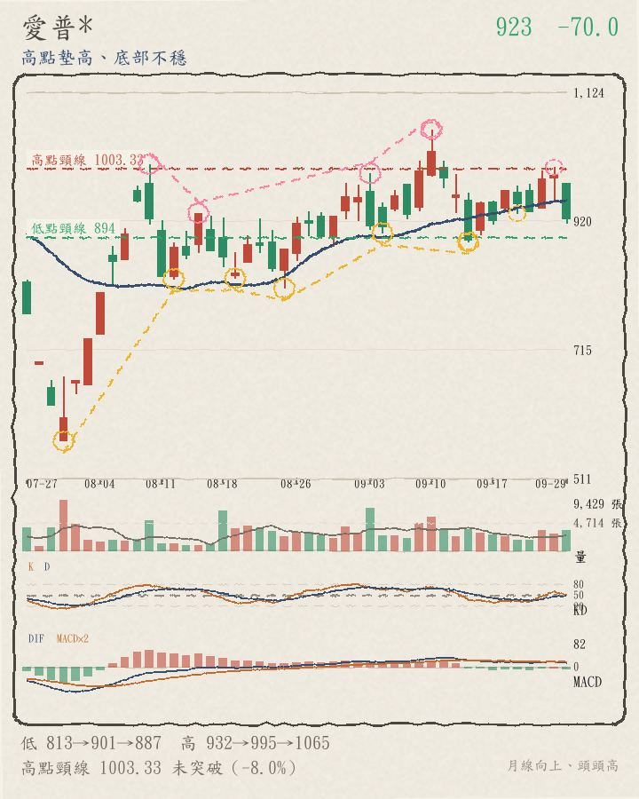
12:31 盤中 923（-7.05%），比加權指數弱 6.33 個百分點、跌破月線 950.95，離高點頸線 1003.33 還差 8.0%，高點還在墊高（但底部沒同步墊高）。
- 月線位置：現價 923 在月線 950.95 之下（-2.9%）；5 日線 966 也在月線之上（短均在上）；月線向上
- 量能：以已過交易時間推估，今天成交量約是 20 日均量的 1.36 倍（量增），比 20 日均量大不少；下跌卻量增，量價背離
- 關鍵價位：高點頸線 1003.33 還沒突破，差 8.0%；前一交易日高點 1005（低於 8.2%）；今天盤中高點 980（低於 5.8%）；今天盤中低點 916（高於 0.8%）
- 轉折結構：高點 932、995、1065 墊高（頭頭高），但低點 813、901、887 沒有同步墊高；還沒確認的轉折低點 09-15 887、09-21 932；還沒確認的轉折高點 09-10 1065、09-24 1005（圖上虛線小圈）
大量 3167 上市
911 -38.0（-4.00%）
上升趨勢（底底高＋頭頭高） 盤中成交值 34 億・全榜第 49 名（上市第 39 名）・相對大盤 -3.28
好條件 4/8：站上月線、月線向上、底底高、頭頭高
不好條件 2/8：今日下跌、相對大盤弱
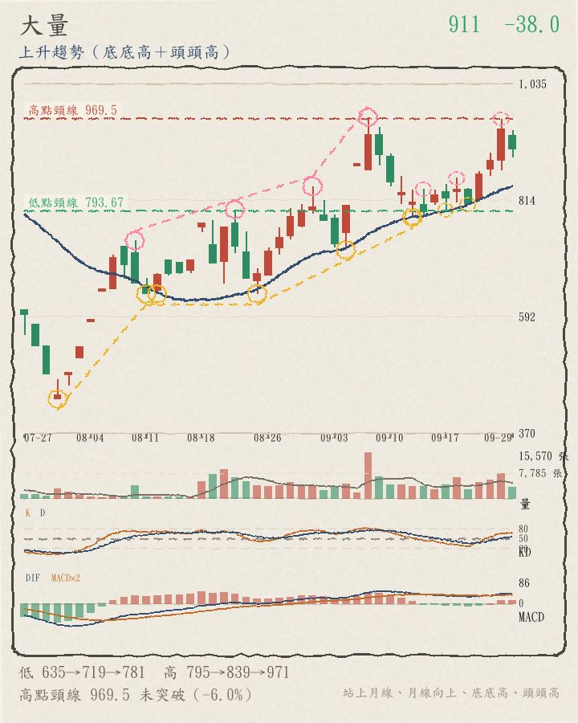
12:31 盤中 911（-4.00%），比加權指數弱 3.28 個百分點、站上月線 833.35，離高點頸線 969.5 還差 6.0%，轉折結構仍是底底高＋頭頭高。
- 月線位置：現價 911 在月線 833.35 之上（+9.3%）；5 日線 868.6 也在月線之上（短均在上）；月線向上
- 量能：以已過交易時間推估，今天成交量約是 20 日均量的 0.96 倍（量平），跟 20 日均量差不多
- 關鍵價位：高點頸線 969.5 還沒突破，差 6.0%；前一交易日高點 968（低於 5.9%）；今天盤中高點 946（低於 3.7%）；今天盤中低點 895（高於 1.8%）
- 轉折結構：低點 635、719、781 一路墊高、高點 795、839、971 也一路墊高，是底底高＋頭頭高；還沒確認的轉折低點 09-17 795、09-21 805；還沒確認的轉折高點 09-18 855、09-24 968（圖上虛線小圈）
台塑化 6505 上市
94.6 +7.4（+8.49%）
底部墊高、未過前高 盤中成交值 33.44 億・全榜第 50 名（上市第 40 名）・相對大盤 +9.21
好條件 7/8：站上月線、月線向上、底底高、突破頸線、相對大盤強、攻擊量（量增＋上漲）、守住今日高檔（距今日高點 1% 內）
不好條件 0/8：無
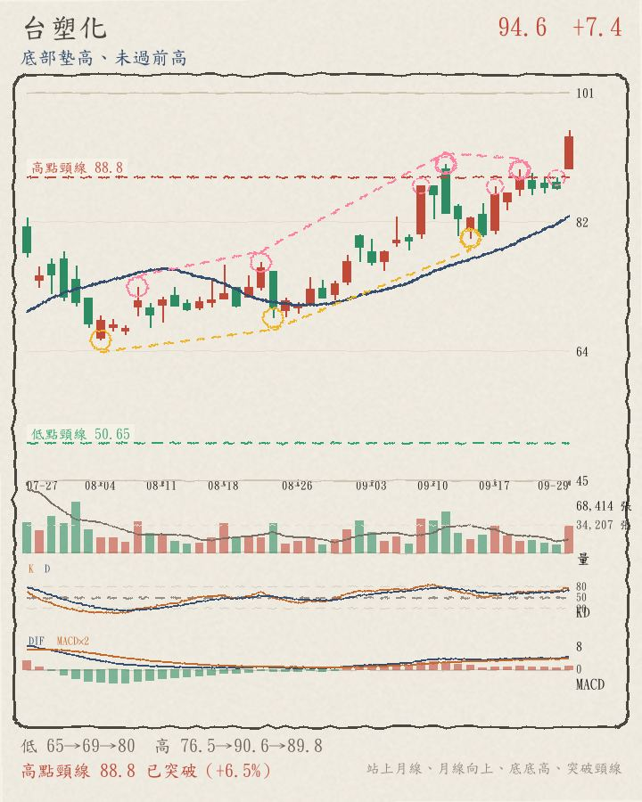
12:31 盤中 94.6（+8.49%），比加權指數強 9.21 個百分點、站上月線 82.03，已突破高點頸線 88.8，底部還在墊高（但高點沒同步創高）。
- 月線位置：現價 94.6 在月線 82.03 之上（+15.3%）；5 日線 87.34 也在月線之上（短均在上）；月線向上
- 量能：以已過交易時間推估，今天成交量約是 20 日均量的 1.79 倍（爆量），比 20 日均量大不少；上漲又量增，量價配合
- 關鍵價位：高點頸線 88.8 已站上；前一交易日高點 88.7（高於 6.7%）；今天盤中高點 95.5（低於 0.9%）；今天盤中低點 89.9（高於 5.2%）
- 轉折結構：低點 65.4、68.6、80 墊高（底底高），但高點 76.5、90.6、89.8 沒有同步創高；還沒確認的轉折低點 09-15 80；還沒確認的轉折高點 09-21 89.8、09-24 88.7（圖上虛線小圈）
晶心科 6533 上市
303.5 +27.5（+9.96%）
高點墊高、底部不穩 盤中成交值 32.88 億・全榜第 51 名（上市第 41 名）・相對大盤 +10.68
好條件 6/8：站上月線、月線向上、頭頭高、突破頸線、相對大盤強、攻擊量（量增＋上漲）
不好條件 0/8：無
12:31 盤中 303.5（+9.96%），比加權指數強 10.68 個百分點、站上月線 252.233，已突破高點頸線 276.46，高點還在墊高（但底部沒同步墊高）。
- 月線位置：現價 303.5 在月線 252.233 之上（+20.3%）；5 日線 263.1 也在月線之上（短均在上）；月線向上
- 量能：以已過交易時間推估，今天成交量約是 20 日均量的 7.66 倍（爆量），比 20 日均量大不少；上漲又量增，量價配合
- 關鍵價位：高點頸線 276.46 已站上；前一交易日高點 276（高於 10.0%）；今天盤中高點 303.5（高於 0.0%）；今天盤中低點 268（高於 13.2%）
- 轉折結構：高點 261、253、275.339 墊高（頭頭高），但低點 243、244.638、224 沒有同步墊高；還沒確認的轉折低點 09-15 224、09-23 249.5；還沒確認的轉折高點 09-22 278.5、09-24 276（圖上虛線小圈）
頎邦 6147 上櫃
210 -3.5（-1.64%）
高點墊高、底部不穩 盤中成交值 32.18 億・全榜第 52 名（上櫃第 11 名）・相對大盤 -0.92
好條件 4/8：站上月線、月線向上、頭頭高、突破頸線
不好條件 4/8：今日下跌、相對大盤弱、貼近今日低點（1% 內）、跌破昨日低點
12:31 盤中 210（-1.64%），比加權指數弱 0.92 個百分點、站上月線 197.425，已突破高點頸線 203，高點還在墊高（但底部沒同步墊高）。
- 月線位置：現價 210 在月線 197.425 之上（+6.4%）；5 日線 220 也在月線之上（短均在上）；月線向上
- 量能：以已過交易時間推估，今天成交量約是 20 日均量的 0.40 倍（量縮），比 20 日均量少很多
- 關鍵價位：高點頸線 203 已站上；前一交易日高點 215（低於 2.3%）；今天盤中高點 217（低於 3.2%）；今天盤中低點 208（高於 1.0%）
- 轉折結構：高點 171、203、203 墊高（頭頭高），但低點 155.5、152、171 沒有同步墊高；還沒確認的轉折低點 09-14 171、09-24 210.5；還沒確認的轉折高點 09-09 203、09-22 233（圖上虛線小圈）
雷科 6207 上櫃
137.5 +12.5（+10.00%）
上升趨勢（底底高＋頭頭高） 盤中成交值 31.45 億・全榜第 53 名（上櫃第 12 名）・相對大盤 +10.72
好條件 7/8：站上月線、月線向上、底底高、頭頭高、突破頸線、相對大盤強、攻擊量（量增＋上漲）
不好條件 0/8：無
12:31 盤中 137.5（+10.00%），比加權指數強 10.72 個百分點、站上月線 111.95，已突破高點頸線 124，轉折結構仍是底底高＋頭頭高。
- 月線位置：現價 137.5 在月線 111.95 之上（+22.8%）；5 日線 117.4 也在月線之上（短均在上）；月線向上
- 量能：以已過交易時間推估，今天成交量約是 20 日均量的 4.83 倍（爆量），比 20 日均量大不少；上漲又量增，量價配合
- 關鍵價位：高點頸線 124 已站上；前一交易日高點 125（高於 10.0%）；今天盤中高點 137.5（高於 0.0%）；今天盤中低點 127.5（高於 7.8%）
- 轉折結構：低點 96.2、103、104 一路墊高、高點 111、114.5、123 也一路墊高，是底底高＋頭頭高；還沒確認的轉折低點 09-15 104、09-23 113.5；還沒確認的轉折高點 09-21 124、09-24 125（圖上虛線小圈）
群聯 8299 上櫃
2110 -15.0（-0.71%）
高點墊高、底部不穩 盤中成交值 31.29 億・全榜第 54 名（上櫃第 13 名）・相對大盤 +0.01
好條件 4/8：站上月線、月線向上、頭頭高、相對大盤強
不好條件 1/8：今日下跌
12:31 盤中 2110（-0.71%），比加權指數強 0.01 個百分點、站上月線 2073.25，離高點頸線 2337.5 還差 9.7%，高點還在墊高（但底部沒同步墊高）。
- 月線位置：現價 2110 在月線 2073.25 之上（+1.8%）；5 日線 2163 也在月線之上（短均在上）；月線向上
- 量能：以已過交易時間推估，今天成交量約是 20 日均量的 0.47 倍（量縮），比 20 日均量少很多
- 關鍵價位：高點頸線 2337.5 還沒突破，差 9.7%；前一交易日高點 2195（低於 3.9%）；今天盤中高點 2135（低於 1.2%）；今天盤中低點 2080（高於 1.4%）
- 轉折結構：高點 2215、2195、2160 墊高（頭頭高），但低點 1905、1970、1900 沒有同步墊高；還沒確認的轉折低點 09-15 1900、09-24 2095；還沒確認的轉折高點 09-23 2350（圖上虛線小圈）
禾伸堂 3026 上市
790 -20.0（-2.47%）
上升趨勢（底底高＋頭頭高） 盤中成交值 30.72 億・全榜第 55 名（上市第 42 名）・相對大盤 -1.75
好條件 4/8：站上月線、月線向上、底底高、頭頭高
不好條件 3/8：今日下跌、相對大盤弱、貼近今日低點（1% 內）
12:31 盤中 790（-2.47%），比加權指數弱 1.75 個百分點、站上月線 749.9，離高點頸線 815.75 還差 3.2%，轉折結構仍是底底高＋頭頭高。
- 月線位置：現價 790 在月線 749.9 之上（+5.3%）；5 日線 789.2 也在月線之上（短均在上）；月線向上
- 量能：以已過交易時間推估，今天成交量約是 20 日均量的 0.50 倍（量縮），比 20 日均量少很多
- 關鍵價位：高點頸線 815.75 還沒突破，差 3.2%；前一交易日高點 820（低於 3.7%）；今天盤中高點 804（低於 1.7%）；今天盤中低點 785（高於 0.6%）
- 轉折結構：低點 590、632、717 一路墊高、高點 745、795、826 也一路墊高，是底底高＋頭頭高；還沒確認的轉折低點 09-16 720、09-23 760；還沒確認的轉折高點 09-22 856、09-24 820（圖上虛線小圈）
漢唐 2404 上市
1220 -65.0（-5.06%）
高點墊高、底部不穩 盤中成交值 29.02 億・全榜第 56 名（上市第 43 名）・相對大盤 -4.34
好條件 4/8：站上月線、月線向上、頭頭高、突破頸線
不好條件 3/8：今日下跌、相對大盤弱、量增下跌（出貨）
12:31 盤中 1220（-5.06%），比加權指數弱 4.34 個百分點、站上月線 1083.75，已突破高點頸線 1087，高點還在墊高（但底部沒同步墊高）。
- 月線位置：現價 1220 在月線 1083.75 之上（+12.6%）；5 日線 1186 也在月線之上（短均在上）；月線向上
- 量能：以已過交易時間推估，今天成交量約是 20 日均量的 2.06 倍（爆量），比 20 日均量大不少；下跌卻量增，量價背離
- 關鍵價位：高點頸線 1087 已站上；前一交易日高點 1285（低於 5.1%）；今天盤中高點 1255（低於 2.8%）；今天盤中低點 1180（高於 3.4%）
- 轉折結構：高點 1105、1085、1085 墊高（頭頭高），但低點 1050、1010、992 沒有同步墊高；還沒確認的轉折低點 09-14 992、09-17 1025；還沒確認的轉折高點 09-16 1060、09-24 1285（圖上虛線小圈）
信驊 5274 上櫃
19160 -675.0（-3.40%）
高點墊高、底部不穩 盤中成交值 28.93 億・全榜第 57 名（上櫃第 14 名）・相對大盤 -2.68
好條件 4/8：站上月線、月線向上、頭頭高、突破頸線
不好條件 4/8：今日下跌、相對大盤弱、貼近今日低點（1% 內）、跌破昨日低點
12:31 盤中 19160（-3.40%），比加權指數弱 2.68 個百分點、站上月線 18382，已突破高點頸線 18336.4，高點還在墊高（但底部沒同步墊高）。
- 月線位置：現價 19160 在月線 18382 之上（+4.2%）；5 日線 20026 也在月線之上（短均在上）；月線向上
- 量能：以已過交易時間推估，今天成交量約是 20 日均量的 0.63 倍（量縮），比 20 日均量少很多
- 關鍵價位：高點頸線 18336.4 已站上；前一交易日高點 20505（低於 6.6%）；今天盤中高點 20430（低於 6.2%）；今天盤中低點 19040（高於 0.6%）
- 轉折結構：高點 16210、18600、19795 墊高（頭頭高），但低點 15930、14600、17170 沒有同步墊高；還沒確認的轉折低點 09-14 17170、09-24 19705；還沒確認的轉折高點 09-22 21800（圖上虛線小圈）
台虹 8039 上市
270.5 +12.0（+4.64%）
區間或轉弱 盤中成交值 28.85 億・全榜第 58 名（上市第 44 名）・相對大盤 +5.36
好條件 1/8：相對大盤強
不好條件 2/8：在月線之下、月線下彎
12:31 盤中 270.5（+4.64%），比加權指數強 5.36 個百分點、跌破月線 286.975，離高點頸線 280.33 還差 3.5%，轉折還沒走出明顯方向。
- 月線位置：現價 270.5 在月線 286.975 之下（-5.7%）；5 日線 262.3 也在月線之下（短均在下）；月線向下
- 量能：以已過交易時間推估，今天成交量約是 20 日均量的 0.54 倍（量縮），比 20 日均量少很多；上漲但量縮，量價背離
- 關鍵價位：高點頸線 280.33 還沒突破，差 3.5%；前一交易日高點 261（高於 3.6%）；今天盤中高點 273.5（低於 1.1%）；今天盤中低點 256.5（高於 5.5%）
- 轉折結構：低點 259、291、256.5 與高點 254、364、327.5 都沒有明顯遞增，屬於區間震盪或轉弱；還沒確認的轉折低點 09-17 256.5、09-23 253；還沒確認的轉折高點 09-17 279、09-22 277（圖上虛線小圈）
中華化 1727 上市
118.5 +3.0（+2.60%）
高點墊高、底部不穩 盤中成交值 28.05 億・全榜第 59 名（上市第 45 名）・相對大盤 +3.32
好條件 7/8：站上月線、月線向上、頭頭高、突破頸線、相對大盤強、攻擊量（量增＋上漲）、守住今日高檔（距今日高點 1% 內）
不好條件 0/8：無
12:31 盤中 118.5（+2.60%），比加權指數強 3.32 個百分點、站上月線 97.5，已突破高點頸線 108.33，高點還在墊高（但底部沒同步墊高）。
- 月線位置：現價 118.5 在月線 97.5 之上（+21.5%）；5 日線 109.4 也在月線之上（短均在上）；月線向上
- 量能：以已過交易時間推估，今天成交量約是 20 日均量的 4.53 倍（爆量），比 20 日均量大不少；上漲又量增，量價配合
- 關鍵價位：高點頸線 108.33 已站上；前一交易日高點 125（低於 5.2%）；今天盤中高點 119（低於 0.4%）；今天盤中低點 104（高於 13.9%）
- 轉折結構：高點 78.4、95.8、106 墊高（頭頭高），但低點 74.3、88.2、86.2 沒有同步墊高；還沒確認的轉折低點 09-14 86.2、09-22 99.6；還沒確認的轉折高點 09-21 109.5、09-24 125（圖上虛線小圈）
光寶科 2301 上市
281 -6.0（-2.09%）
高點墊高、底部不穩 盤中成交值 27.84 億・全榜第 60 名（上市第 46 名）・相對大盤 -1.37
好條件 1/8：頭頭高
不好條件 5/8：今日下跌、相對大盤弱、在月線之下、貼近今日低點（1% 內）、月線下彎
12:31 盤中 281（-2.09%），比加權指數弱 1.37 個百分點、跌破月線 291.375，離高點頸線 286.83 還差 2.0%，高點還在墊高（但底部沒同步墊高）。
- 月線位置：現價 281 在月線 291.375 之下（-3.6%）；5 日線 285.1 也在月線之下（短均在下）；月線向下
- 量能：以已過交易時間推估，今天成交量約是 20 日均量的 0.57 倍（量縮），比 20 日均量少很多
- 關鍵價位：高點頸線 286.83 還沒突破，差 2.0%；前一交易日高點 288（低於 2.4%）；今天盤中高點 288.5（低於 2.6%）；今天盤中低點 279（高於 0.7%）
- 轉折結構：高點 229、286.5、328 墊高（頭頭高），但低點 251、296.5、271 沒有同步墊高；還沒確認的轉折低點 09-16 271、09-24 278；還沒確認的轉折高點 09-22 299.5、09-24 288（圖上虛線小圈）
東捷 8064 上櫃
143.5 +4.5（+3.24%）
區間或轉弱 盤中成交值 27.51 億・全榜第 61 名（上櫃第 15 名）・相對大盤 +3.96
好條件 5/8：站上月線、月線向上、突破頸線、相對大盤強、攻擊量（量增＋上漲）
不好條件 0/8：無
12:31 盤中 143.5（+3.24%），比加權指數強 3.96 個百分點、站上月線 120.45，已突破高點頸線 141.88，轉折還沒走出明顯方向。
- 月線位置：現價 143.5 在月線 120.45 之上（+19.1%）；5 日線 136 也在月線之上（短均在上）；月線向上
- 量能：以已過交易時間推估，今天成交量約是 20 日均量的 2.49 倍（爆量），比 20 日均量大不少；上漲又量增，量價配合
- 關鍵價位：高點頸線 141.88 已站上；前一交易日高點 142（高於 1.1%）；今天盤中高點 148.5（低於 3.4%）；今天盤中低點 138（高於 4.0%）
- 轉折結構：低點 96.6、92、108 與高點 110.5、141.5、142 都沒有明顯遞增，屬於區間震盪或轉弱；還沒確認的轉折低點 09-22 133、09-24 130.5；還沒確認的轉折高點 09-22 142、09-24 142（圖上虛線小圈）
嘉澤 3533 上市
1700 +10.0（+0.59%）
區間或轉弱 盤中成交值 27.42 億・全榜第 62 名（上市第 47 名）・相對大盤 +1.31
好條件 4/8：站上月線、月線向上、相對大盤強、攻擊量（量增＋上漲）
不好條件 0/8：無
12:31 盤中 1700（+0.59%），比加權指數強 1.31 個百分點、站上月線 1640，離高點頸線 1765 還差 3.7%，轉折還沒走出明顯方向。
- 月線位置：現價 1700 在月線 1640 之上（+3.7%）；5 日線 1660 也在月線之上（短均在上）；月線向上
- 量能：以已過交易時間推估，今天成交量約是 20 日均量的 2.10 倍（爆量），比 20 日均量大不少；上漲又量增，量價配合
- 關鍵價位：高點頸線 1765 還沒突破，差 3.7%；前一交易日高點 1735（低於 2.0%）；今天盤中高點 1765（低於 3.7%）；今天盤中低點 1680（高於 1.2%）
- 轉折結構：低點 1565、1540、1495 與高點 2160、2050、1770 都沒有明顯遞增，屬於區間震盪或轉弱；還沒確認的轉折低點 09-23 1660、09-24 1660；還沒確認的轉折高點 09-17 1620、09-23 1760（圖上虛線小圈）
強茂 2481 上市
173.5 -1.0（-0.57%）
高點墊高、底部不穩 盤中成交值 27.39 億・全榜第 63 名（上市第 48 名）・相對大盤 +0.15
好條件 4/8：站上月線、月線向上、頭頭高、相對大盤強
不好條件 2/8：今日下跌、貼近今日低點（1% 內）
12:31 盤中 173.5（-0.57%），比加權指數強 0.15 個百分點、站上月線 159.4，離高點頸線 181 還差 4.1%，高點還在墊高（但底部沒同步墊高）。
- 月線位置：現價 173.5 在月線 159.4 之上（+8.8%）；5 日線 171 也在月線之上（短均在上）；月線向上
- 量能：以已過交易時間推估，今天成交量約是 20 日均量的 0.48 倍（量縮），比 20 日均量少很多
- 關鍵價位：高點頸線 181 還沒突破，差 4.1%；前一交易日高點 181（低於 4.1%）；今天盤中高點 180（低於 3.6%）；今天盤中低點 172（高於 0.9%）
- 轉折結構：高點 152.5、161、168 墊高（頭頭高），但低點 129.5、146、146 沒有同步墊高；還沒確認的轉折低點 09-14 146、09-24 172；還沒確認的轉折高點 09-23 181、09-24 181（圖上虛線小圈）
台勝科 3532 上市
461 +8.5（+1.88%）
上升趨勢（底底高＋頭頭高） 盤中成交值 26.81 億・全榜第 64 名（上市第 49 名）・相對大盤 +2.60
好條件 5/8：站上月線、月線向上、底底高、頭頭高、相對大盤強
不好條件 0/8：無
12:31 盤中 461（+1.88%），比加權指數強 2.60 個百分點、站上月線 416.4，離高點頸線 467 還差 1.3%，轉折結構仍是底底高＋頭頭高。
- 月線位置：現價 461 在月線 416.4 之上（+10.7%）；5 日線 443.9 也在月線之上（短均在上）；月線向上
- 量能：以已過交易時間推估，今天成交量約是 20 日均量的 1.00 倍（量平），跟 20 日均量差不多
- 關鍵價位：高點頸線 467 還沒突破，差 1.3%；前一交易日高點 453（高於 1.8%）；今天盤中高點 472（低於 2.3%）；今天盤中低點 449（高於 2.7%）
- 轉折結構：低點 331.5、367.5、400 一路墊高、高點 418.5、438.5、474 也一路墊高，是底底高＋頭頭高；還沒確認的轉折低點 09-14 400、09-23 430.5；還沒確認的轉折高點 09-17 474、09-23 460（圖上虛線小圈）
世芯-KY 3661 上市
3710 -60.0（-1.59%）
區間或轉弱 盤中成交值 24.71 億・全榜第 65 名（上市第 50 名）・相對大盤 -0.87
好條件 0/8：無
不好條件 6/8：今日下跌、相對大盤弱、在月線之下、貼近今日低點（1% 內）、跌破昨日低點、月線下彎
12:31 盤中 3710（-1.59%），比加權指數弱 0.87 個百分點、跌破月線 3830，離高點頸線 4012.5 還差 7.5%，轉折還沒走出明顯方向。
- 月線位置：現價 3710 在月線 3830 之下（-3.1%）；5 日線 3690 也在月線之下（短均在下）；月線向下
- 量能：以已過交易時間推估，今天成交量約是 20 日均量的 0.36 倍（量縮），比 20 日均量少很多
- 關鍵價位：高點頸線 4012.5 還沒突破，差 7.5%；前一交易日高點 3785（低於 2.0%）；今天盤中高點 3795（低於 2.2%）；今天盤中低點 3675（高於 1.0%）
- 轉折結構：低點 2630、3585、3260 與高點 3720、4530、4350 都沒有明顯遞增，屬於區間震盪或轉弱；還沒確認的轉折低點 09-17 3260、09-24 3715；還沒確認的轉折高點 09-10 4075、09-22 3950（圖上虛線小圈）
量縮
↑ 回上方清單
光頡 3624 上櫃
141 +1.0（+0.71%）
上升趨勢（底底高＋頭頭高） 盤中成交值 21.97 億・全榜第 66 名（上櫃第 16 名）・相對大盤 +1.43
好條件 6/8：站上月線、月線向上、底底高、頭頭高、突破頸線、相對大盤強
不好條件 0/8：無
12:31 盤中 141（+0.71%），比加權指數強 1.43 個百分點、站上月線 110.765，已突破高點頸線 129.75，轉折結構仍是底底高＋頭頭高。
- 月線位置：現價 141 在月線 110.765 之上（+27.3%）；5 日線 130.9 也在月線之上（短均在上）；月線向上
- 量能：以已過交易時間推估，今天成交量約是 20 日均量的 0.97 倍（量平），跟 20 日均量差不多
- 關鍵價位：高點頸線 129.75 已站上；前一交易日高點 144.5（低於 2.4%）；今天盤中高點 143.5（低於 1.7%）；今天盤中低點 138（高於 2.2%）
- 轉折結構：低點 81.8、84.8、115 一路墊高、高點 163、99.4、98.9 也一路墊高，是底底高＋頭頭高；還沒確認的轉折低點 09-22 122、09-23 122；還沒確認的轉折高點 09-21 138、09-24 144.5（圖上虛線小圈）
聯亞 3081 上櫃
2665 -35.0（-1.30%）
上升趨勢（底底高＋頭頭高） 盤中成交值 21.72 億・全榜第 67 名（上櫃第 17 名）・相對大盤 -0.58
好條件 2/8：底底高、頭頭高
不好條件 5/8：今日下跌、相對大盤弱、在月線之下、貼近今日低點（1% 內）、月線下彎
12:31 盤中 2665（-1.30%），比加權指數弱 0.58 個百分點、跌破月線 2963.75，離高點頸線 2910 還差 8.4%，轉折結構仍是底底高＋頭頭高。
- 月線位置：現價 2665 在月線 2963.75 之下（-10.1%）；5 日線 2792 也在月線之下（短均在下）；月線向下
- 量能：以已過交易時間推估，今天成交量約是 20 日均量的 0.29 倍（量縮），比 20 日均量少很多
- 關鍵價位：高點頸線 2910 還沒突破，差 8.4%；前一交易日高點 2710（低於 1.7%）；今天盤中高點 2735（低於 2.6%）；今天盤中低點 2645（高於 0.8%）
- 轉折結構：低點 1335、1450、2650 一路墊高、高點 3065、3600、2930 也一路墊高，是底底高＋頭頭高；還沒確認的轉折低點 09-15 2650、09-23 2585；還沒確認的轉折高點 09-17 2930、09-22 2950（圖上虛線小圈）
中美晶 5483 上櫃
191 +2.5（+1.33%）
高點墊高、底部不穩 盤中成交值 20.28 億・全榜第 68 名（上櫃第 18 名）・相對大盤 +2.05
好條件 6/8：站上月線、月線向上、頭頭高、突破頸線、相對大盤強、守住今日高檔（距今日高點 1% 內）
不好條件 0/8：無
12:31 盤中 191（+1.33%），比加權指數強 2.05 個百分點、站上月線 182.15，已突破高點頸線 187.9，高點還在墊高（但底部沒同步墊高）。
- 月線位置：現價 191 在月線 182.15 之上（+4.9%）；5 日線 188.4 也在月線之上（短均在上）；月線向上
- 量能：以已過交易時間推估，今天成交量約是 20 日均量的 0.95 倍（量平），跟 20 日均量差不多
- 關鍵價位：高點頸線 187.9 已站上；前一交易日高點 188.5（高於 1.3%）；今天盤中高點 192（低於 0.5%）；今天盤中低點 186（高於 2.7%）
- 轉折結構：高點 187.5、187.5、187.5 墊高（頭頭高），但低點 173.5、173、170 沒有同步墊高；還沒確認的轉折低點 09-18 180.5、09-24 181.5；還沒確認的轉折高點 09-17 191.5、09-22 202（圖上虛線小圈）
欣銓 3264 上櫃
241 -5.0（-2.03%）
高點墊高、底部不穩 盤中成交值 18.62 億・全榜第 69 名（上櫃第 19 名）・相對大盤 -1.31
好條件 4/8：站上月線、月線向上、頭頭高、突破頸線
不好條件 3/8：今日下跌、相對大盤弱、跌破昨日低點
12:31 盤中 241（-2.03%），比加權指數弱 1.31 個百分點、站上月線 239.275，已突破高點頸線 240.33，高點還在墊高（但底部沒同步墊高）。
- 月線位置：現價 241 在月線 239.275 之上（+0.7%）；5 日線 265.4 也在月線之上（短均在上）；月線向上
- 量能：以已過交易時間推估，今天成交量約是 20 日均量的 0.85 倍（量平），比 20 日均量少一些
- 關鍵價位：高點頸線 240.33 已站上；前一交易日高點 255（低於 5.5%）；今天盤中高點 245（低於 1.6%）；今天盤中低點 238（高於 1.3%）
- 轉折結構：高點 238、239.5、251.5 墊高（頭頭高），但低點 202、222.5、220 沒有同步墊高；還沒確認的轉折低點 09-16 220、09-24 244；還沒確認的轉折高點 09-10 251.5、09-22 289.5（圖上虛線小圈）
鈊象 3293 上櫃
775 +14.0（+1.84%）
高點墊高、底部不穩 盤中成交值 18.4 億・全榜第 70 名（上櫃第 20 名）・相對大盤 +2.56
好條件 6/8：站上月線、月線向上、頭頭高、突破頸線、相對大盤強、攻擊量（量增＋上漲）
不好條件 0/8：無
12:31 盤中 775（+1.84%），比加權指數強 2.56 個百分點、站上月線 714.45，已突破高點頸線 718，高點還在墊高（但底部沒同步墊高）。
- 月線位置：現價 775 在月線 714.45 之上（+8.5%）；5 日線 734 也在月線之上（短均在上）；月線向上
- 量能：以已過交易時間推估，今天成交量約是 20 日均量的 1.10 倍（量增），比 20 日均量大一些；上漲又量增，量價配合
- 關鍵價位：高點頸線 718 已站上；前一交易日高點 774（高於 0.1%）；今天盤中高點 796（低於 2.6%）；今天盤中低點 766（高於 1.2%）
- 轉折結構：高點 730、714、714 墊高（頭頭高），但低點 696、700、687 沒有同步墊高；還沒確認的轉折低點 09-14 687、09-21 709；還沒確認的轉折高點 09-18 729、09-24 774（圖上虛線小圈）